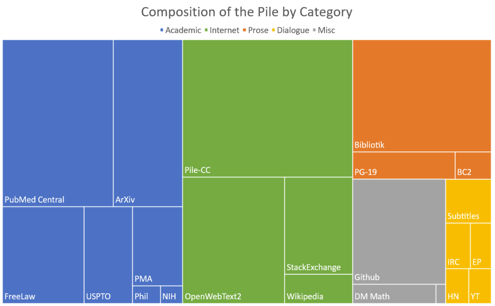
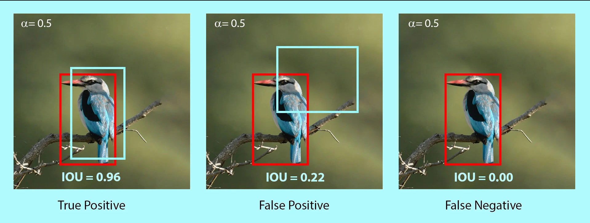

Chapter 2 Introducing the modalities
Authors: Cem Akkus, Vladana Djakovic, Christopher Benjamin Marquardt
Supervisor: Dr. Matthias Aßenmacher
Natural Language Processing (NLP) has existed for about 50 years, but it is more relevant than ever. There have been several breakthroughs in this branch of machine learning that is concerned with spoken and written language. For example, learning internal representations of words was one of the greater advances of the last decade. Word embeddings ((???), (???)) made it possible and allowed developers to encode words as dense vectors that capture their underlying semantic content. In this way, similar words are embedded close to each other in a lower-dimensional feature space. Another important challenge was solved by Encoder-decoder (also called sequence-to-sequence) architectures (???), which made it possible to map input sequences to output sequences of different lengths. They are especially useful for complex tasks like machine translation, video captioning or question answering. This approach makes minimal assumptions on the sequence structure and can deal with different word orders and active, as well as passive voice.
A definitely significant state-of-the-art technique is Attention (???), which enables models to actively shift their focus – just like humans do. It allows following one thought at a time while suppressing information irrelevant to the task. As a consequence, it has been shown to significantly improve performance for tasks like machine translation. By giving the decoder access to directly look at the source, the bottleneck is avoided and at the same time, it provides a shortcut to faraway states and thus helps with the vanishing gradient problem. One of the most recent sequence data modeling techniques is Transformers (Vaswani, Shazeer, Parmar, Uszkoreit, Jones, Gomez, Kaiser, et al. (2017b)), which are solely based on attention and do not have to process the input data sequentially (like RNNs). Therefore, the deep learning model is better in remembering context-induced earlier in long sequences. It is the dominant paradigm in NLP currently and even makes better use of GPUs, because it can perform parallel operations. Transformer architectures like BERT (Devlin et al. (2018c)), T5 ((???)) or GPT-3 (T. Brown et al. (2020)) are pre-trained on a large corpus and can be fine-tuned for specific language tasks. They have the capability to generate stories, poems, code and much more. With the help of the aforementioned breakthroughs, deep networks have been successful in retrieving information and finding representations of semantics in the modality text. In the next paragraphs, developments for another modality image are going to be presented.
Computer vision (CV) focuses on replicating parts of the complexity of the human visual system and enabling computers to identify and process objects in images and videos in the same way that humans do. In recent years it has become one of the main and widely applied fields of computer science. However, there are still problems that are current research topics, whose solutions depend on the research’s view on the topic. One of the problems is how to optimize deep convolutional neural networks for image classification. The accuracy of classification depends on width, depth and image resolution. One way to address the degradation of training accuracy is by introducing a deep residual learning framework (He et al. 2015). On the other hand, another less common method is to scale up ConvNets, to achieve better accuracy is by scaling up image resolution. Based on this observation, there was proposed a simple yet effective compound scaling method, called EfficientNets (Tan and Le 2019).
Another state-of-the-art trend in computer vision is learning effective visual representations without human supervision. Discriminative approaches based on contrastive learning in the latent space have recently shown great promise, achieving state-of-the-art results, but the simple framework for contrastive learning of visual representations, which is called SimCLR, outperforms previous work (Chen et al. 2020). However, another research proposes as an alternative a simple “swapped” prediction problem where we predict the code of a view from the representation of another view. Where features are learned by Swapping Assignments between multiple Views of the same image (SwAV) (???). Further recent contrastive methods are trained by reducing the distance between representations of different augmented views of the same image (‘positive pairs’) and increasing the distance between representations of augmented views from different images (‘negative pairs’). Bootstrap Your Own Latent (BYOL) is a new algorithm for self-supervised learning of image representatios (Grill, Strub, Altché, Tallec, Richemond, et al. 2020b).
Self-attention-based architectures, in particular, Transformers have become the model of choice in natural language processing (NLP). Inspired by NLP successes, multiple works try combining CNN-like architectures with self-attention, some replacing the convolutions entirely. The latter models, while theoretically efficient, have not yet been scaled effectively on modern hardware accelerators due to the use of specialized attention patterns. Inspired by the Transformer scaling successes in NLP, one of the experiments is applying a standard Transformer directly to the image (???). Due to the widespread application of computer vision, these problems differ and are constantly being at the center of attention of more and more research.
With the rapid development in NLP and CV in recent years, it was just a question of time to merge both modalities to tackle multi-modal tasks. The release of DALL-E 2 just hints at what one can expect from this merge in the future. DALL-E 2 is able to create photorealistic images or even art from any given text input. So it takes the information of one modality and turns it into another modality. It needs multi-modal datasets to make this possible, which are still relatively rare. This shows the importance of available data and the ability to use it even more. Nevertheless, all modalities are in need of huge datasets to pre-train their models. It’s common to pre-train a model and fine-tune it afterwards for a specific task on another dataset. For example, every state-of-the-art CV model uses a classifier pre-trained on an ImageNet based dataset. The cardinality of the datasets used for CV is immense, but the datasets used for NLP are of a completely different magnitude. BERT uses the English Wikipedia and the Bookscorpus to pre-train the model. The latter consists of almost 1 billion words and 74 million sentences. The pre-training of GPT-3 is composed of five huge corpora: CommonCrawl, Books1 and Books2, Wikipedia and WebText2. Unlike language model pre-training that can leverage tremendous natural language data, vision-language tasks require high-quality image descriptions that are hard to obtain for free. Widely used pre-training datasets for VL-PTM are Microsoft Common Objects in Context (COCO), Visual Genome (VG), Conceptual Captions (CC), Flickr30k, LAION-400M and LAION-5B, which is now the biggest openly accessible image-text dataset.
Besides the importance of pre-training data, there must also be a way to test or compare the different models. A reasonable approach is to compare the performance on specific tasks, which is called benchmarking. A nice feature of benchmarks is that they allow us to compare the models to a human baseline. Different metrics are used to compare the performance of the models. Accuracy is widely used, but there are also some others. For CV the most common benchmark datasets are ImageNet, ImageNetReaL, CIFAR-10(0), OXFORD-IIIT PET, OXFORD Flower 102, COCO and Visual Task Adaptation Benchmark (VTAB). The most common benchmarks for NLP are General Language Understanding Evaluation (GLUE), SuperGLUE, SQuAD 1.1, SQuAD 2.0, SWAG, RACE, ReCoRD, and CoNLL-2003. VTAB, GLUE and SuperGLUE also provide a public leader board. Cross-modal tasks such as Visual Question Answering (VQA), Visual Commonsense Reasoning (VCR), Natural Language Visual Reasoning (NLVR), Flickr30K, COCO and Visual Entailment are common benchmarks for VL-PTM.
2.2 State-of-the-art in Computer Vision
Author: Vladana Djakovic
Supervisor: Daniel Schalk
2.2.1 History
The first research about visual perception comes from neurophysiological research performed in the 1950s and 1960s on cats, where they used cats as a model to understand how human vision is compounded. Scientists concluded that human vision is hierarchical, and neurons detect simple features like edges, followed by more complex features like shapes and more complex visual representations. Inspired by this knowledge, computer scientists focused on recreating human neurological structures.
At around the same time, as computers became more advanced, computer scientists worked on imitating human neurons’ behavior and simulating a hypothetical neural network. In his book “The Organization of Behaviour”(1949) Donald Hebbin stated that neural pathways strengthen over each successive use, especially between neurons that tend to fire at the same time, thus beginning the long journey towards quantifying the complex processes of the brain. The first Hebbian network, inspired by this neurological research, was successfully implemented at MIT in 1954 (???).
New findings led to the establishment of the field of artificial intelligence in 1956 on-campus at Dartmouth College. Scientists began to develop ideas and research how to create techniques that would imitate the human eye.
In 1959 early research on developing neural networks was performed at Stanford University, where models called “ADALINE” and “MADALINE,” Multiple ADAptive LINear Elements, were developed. Those models aimed to recognize binary patterns and could predict the next bit (???).
Starting optimism about Computer Vision and neural networks disappeared after 1969 and the publication of the book “Perceptrons” by Marvin Minsky, founder of the MIT AI Lab. According to the authors of this book, the single perception approach to neural networks could not be translated effectively into multi-layered neural networks. The period that followed was known as AI Winter, which lasted until 2010, when the technological development of computer and the internet became widely used. In 2012 breakthroughs in Computer Vision happened at the ImageNet Large Scale Visual Recognition Challenge (ILSVEC). The team from the University of Toronto issued a deep neural network called AlexNet (???) that changed the field of artificial intelligent Computer Vision (CV). AlexNet achieved an error rate of 16.4%.
From then until today, Computer Vision has been one of the fastest developing fields. Researchers are competing to develop a model that would be the most similar to the human eye and help humans in everyday life. In this work the author will describe only a few recent state-of-the-art models.
2.2.2 Supervised and unsupervised learning
As part of artificial intelligence (AI) and machine learning (ML), there are two basic approaches:
- supervised learning;
- unsupervised learning.
Supervised learning (???) is used to train algorithms on labeled datasets that accurately classify data or predict outcomes. With labeled inputs and outputs model can measure its accuracy and learn over time. We can distinguish two types of data mining problems:
- classification,
- regression.
In unsupervised learning (???), unlabelled datasets are analyzed and clustered using machine learning algorithms. These algorithms aim to discover hidden patterns or data groupings without previous human intervention. The ability to find similarities and differences in information is mainly used for three main tasks:
- clustering,
- association,
- dimensionality reduction.
Solving the problems where the dataset can be both labeled and unlabeled requires asemi-supervised approach that lies between supervised and unsupervised learning. It is useful when extracting relevant features from data that is complex and when data is high volume, i.e., medical images. Nowadays, a new research topic appeared in the machine learning community, and it is Self-Supervised Learning. Self-Supervised learning is a process where the model trains itself to learn one part of the input from another (???). As a subset of unsupervised learning, it involves machines labeling, categorizing, and analyzing information independently and drawing conclusions based on connections and correlations. It can also be considered an autonomous form of supervised learning since it does not require human input to label data. Unlike unsupervised learning, self-supervised learning does not focus on clustering nor grouping (???). One part of Self-Supervised learning is contrastive learning, which is used to learn the general features of an unlabeled dataset identifying similar and dissimilar data points. It is utilized to train the model to learn about our data without any annotations or labels (???).
2.2.3 Scaling networks
Ever since the introduction of AlexNet in 2012, the problem of scaling convolutional neural networks has become the topic of active research. ConvNet can be scaled in all three dimensions: depth, width, or image size. One of the first researches in 2015 showed that network depth is crucial for image classification. The question whether stacking more layers enables the network to learn better leads He K., Zhang X., et al. to deep residual networks called ResNet (He et al. 2015), which will be described in this work. Later on, scaling networks by their depth became the most popular way to improve their performance. The second solution was to scale ConvNets by their width. Wider networks tend to be able to capture more fine-grained features and are easier to train (???). Lastly, scaling the image’s resolution can improve the network’s performance. With higher resolution input images, ConvNets could capture more fine-grained patterns. GPipe is one of the most famous networks created by this technique (???). The question of possibility of scaling by all three dimensions was answered by Tan M. et al. in 2019 in the work presenting EfficientNet. This network was built by scaling up ConvNets by all three dimensions and will also be described here.
2.2.4 Deep residual networks
The deep residual networks, called ResNets, (???) were presented as the answer on the question whether stacking more layers would enable network to learn better. Until then one obstacle for simply stacking layers was the problem of vanishing/exploding gradients. It has been primarily addressed by normalized initialization and intermediate normalization layers. That enabled networks with tens of layers to start converging for stochastic gradient descent (SGD) with backpropagation.
Another obstacle was a degradation problem. It occurs when the network depth increases, followed by saturating and then rapidly decreasing accuracy. Overfitting is not caused by such degradation, and adding more layers to a suitably deep model leads to higher training error, which indicates that not all systems are similarly easy to optimize.
For example, it was suggested to consider a shallower architecture and its deeper counterpart that adds more layers. One way to avoid the degradation problem is to create a deeper model, where the auxiliary layers are identity mappings, and other layers are copied from a shallower model. The deeper model should produce no higher training error than its shallower counterpart. However, in practice, it is not the case, and it is hard to find comparably good to construct or better solutions. The solution to this degradation problem proposed by them is a deep residual learning framework.
2.2.4.1 Deep Residual Learning
2.2.4.1.1 Residual Learning
The idea of residual learning is to replace the approximation of underlying mapping \(H\left( x\right)\), which is approximated by a few stacked layers (not necessarily the entire net), with an approximation of residual function \(F(x):= H\left( x \right) − x\). Here x denotes the inputs to the first of these layers, and it is assumed that both inputs and outputs have the same dimensions. The original function change its form \(F\left( x \right)+x\).
A counterintuitive phenomenon about degradation motivated this reformulation. The new deeper model should have no more significant training error when added layers are constructed as identity mappings. However,due to degradation problem, solvers may have challenges approximating identity mappings by multiple nonlinear layers. Using the residual learning reformulation, can drive the weights of the nonlinear layers toward zero to approach identity mappings if they are optimal. Generally, identity mappings are not optimal, but new reformulations may help to precondition the problem. When an optimal function is closer to an identity mapping than a zero mapping, finding perturbations concerning an identity mapping should be easier than learning the function from scratch.
2.2.4.1.2 Identity Mapping by Shortcuts
Residual learning is adopted to every few stacked layers where a building block is defined as shown in Fig. 1:
\[\begin{equation} \tag{1} y = F \left( x,\left\{ W_i\right\} \right) + x \end{equation}\]
x and y present the input and output vectors of the layers.
FIGURE 2.1: Figure 1. Building block of residual learning
The function \(F \left( x,\left\{ W_i\right\} \right)\) represents the residual mapping that is to be learned. For the example with two layers from Fig.1 that has two layers, \(F = W_2\sigma\left( W_1x\right)\) in which \(\sigma\) denotes the ReLU activation function, and to simplify the notations, biases are left out. The operation \(F + x\) is conducted with a shortcut connection and element-wise addition. Afterward, He et al. applied second nonlinearity ( i.e., \(\sigma \left( y \right)\), Fig.1).
The shortcut connections in Eq. (1) neither adds an extra parameter nor increases computation complexity, which enables comparisons between plain and residual networks that concurrently have the same number of parameters, depth, width, and computational cost (except for the negligible element-wise addition). Dimensions of x and F must be equal in Eq. (1). Alternatively, to match the dimensions, linear projection \(W_s\) by the shortcut connections can be applied:
\[\begin{equation} \tag{2} y = F \left( x,\left\{ W_i\right\} \right)+ W_sx. \end{equation}\]
The square matrix \(W_s\) can be used in Eq. (1). However, experiments showed that identity mapping is enough to solve the degradation problem. Therefore, \(W_s\) only aims to match dimensions. Although more levels are possible, it was experimented with function F having two or three layers without stating the exact form of it. Assuming F only has one layer, Eq (1) it is comparable to a linear layer: \(y = W_1 x + x\). The theoretical notations are about fully-connected layers, but convolutional layers were used. The function \(F \left( x,\left\{ W_i\right\} \right)\) can be applied to represent multiple convolutional layers. Two feature maps are added element-wise, channel by channel.
2.2.4.2 Network Architectures
To construct efficient residual network, various plain/residual networks were tested. They trained the network on benchmarked datasets, one of them being the ImageNet dataset, which will be used for a comparison of network architectures. Fig. 2 shows that every residual network needs a plain baseline network inspired by the VGG network (???) on which identity mapping by shortcuts is applied.
Plain Network The philosophy of VGG nets 41 mainly inspires plain baselines. There are two rules that convolution layers, which usually have 3x3 filters, follow:
- feature maps with the same output size have the same number of layers;
- reducing the size of a feature map by half doubles the number of filters per layer to maintain time complexity per layer
Convolutional layers with a stride of 2 perform downsampling directly. A global average pooling layer and a 1000-way fully-connected layer with softmax are at the end of the network. The number of weighted layers sums up to 34 in Fig. 2 (middle).Compared to VGG nets, this model has fewer filters and lower complexity. (Fig. 2, left).
Residual Network Based on the above plain network, additional shortcut connections (Fig. 2, right) turn the network into its associate residual variant. The identity shortcuts (Eq. (1)) can be directly used in the case of the exact dimensions of the input and output (solid line shortcuts in Fig. 2). For the different dimensions (dotted line shortcuts in Fig. 2), two options are considered:
- The shortcut still performs identity mapping, but with extra zero entries padded to cope with the increasing dimensions, without adding new parameters;
- The projection shortcut in Eq. (2) matches dimensions (due to 1×1 convolutions).
In both cases, shortcuts will be done with a stride of two when they go across feature maps of two sizes.
FIGURE 2.2: Figure 2. Architecture of ResNet
2.2.5 EfficientNet
Until Tan M. introduced EfficientNet (???), it was popular to scale only one of the three dimensions – depth, width, or image size. The empirical study shows that it is critical to balance all network dimensions, which can be achieved by simply scaling each with a constant ratio. Based on this observation, a simple yet effective compound scaling method was proposed, which uniformly scales network width, depth, and resolution with a set of fixed scaling coefficients. For example, if 2N times more computational resources are available. In that case, increasing the network depth by \(\alpha N\), width by \(\beta N\), and image size by \(\gamma N\) would be possible.Here \(\alpha,\beta,\gamma\) are constant coefficients determined by a small grid search on the original miniature model. Fig. 3 illustrates the difference between this scaling method and conventional methods. A compound scaling method makes sense if an input image is bigger since a larger receptive field requires more layers and more significant channel features to capture fine-grained patterns. Theoretically and empirically, there has been a special relationship between network width and depth (???). Existing MobileNets (???) and ResNet are used to demonstrated new scaling method.
FIGURE 2.3: Figure 3. Model scaling
2.2.5.1 Compound Model Scaling
2.2.5.1.1 Problem Formulation
A function \(Y_i = \mathcal{F}i \left( X_i \right)\) with the operator \(\mathcal{F}_i\), output tensor \(Y_i\), input tensor \(X_i\) of shape \(\left( H_i, W_i, C_i \right)\), spatial dimensions \(H_i\), \(W_i\), and channel dimension \(C_i\) is called a ConvNet Layer \(i\). A ConvNet N appears as a list of composing layers: \[\begin{equation} \tag{3} \mathcal{N}=\mathcal{F_k}\odot \cdots \mathcal{F_2}\odot\mathcal{F_1}\left( X_1 \right)=\bigodot{j=1\cdots k}\mathcal{F_j}\left( X_1 \right) \end{equation}\]
Effectively, these layers are often partitioned into multiple stages, and all layers in each stage share the same architecture. For example, ResNet has five stages, with all layers in every stage being the same convolutional type, except for the first layer that performs down-sampling. Therefore, a ConvNet can be defined as:
\[\begin{equation} \tag{4} \mathcal{N}=\bigodot_{i=1\cdots s}\mathcal{F_i}^{L_i}\left( X_{\left( H_i, W_i, C_i \right)} \right) \end{equation}\]
where \(\mathcal{F_i}^{L_i}\) denotes layer \(\mathcal{F_i}\) which is repeated \(L_i\) times in stage \(i\), and \(\left( H_i, W_i, C_i \right)\) is the shape of input tensor \(X\) of layer \(i\).
In comparison to the regular ConvNet focusing on best layer architecture \(\mathcal{F_i}\) search, model scaling centers on the expansion of the network length \(\left( L_i\right)\), width \(\left( C_i \right)\), and/or resolution \(\left( H_i, W_i\right)\) without changing \(\mathcal{F_i}\) that was predefined in the baseline network. Although model scaling simplifies the design problem of the new resource constraints through the fixing \(\mathcal{F_i}\), different \(\left( L_i, H_i, W_i, C_i \right)\) for each layer, the large designe space remains to be explored. To further reduce design space, all layers are restricted to be scaled uniformly with a constant ratio. In this case, the goal is to maximize the model’s accuracy for any given resource constraints, which can be presented as an optimization problem:
\[\begin{equation} \tag{5} \max_{d,w,r} Accuracy \left( \mathcal{N}\left( d,w,r \right) \right) \\ s.t.\mathcal{N}\left( d,w,r \right)=\bigodot_{I=1...s}\hat{\mathcal{F}}{i}^{d\cdot \hat{L{i}}}\left( X_{\left\langle r\cdot \hat{H_i},r\cdot \hat{W_i},w\cdot \hat{C_i}\right\rangle} \right) \\ Memory\left( \mathcal{N} \right)≤ targetMemory \\ FLOPS\left( \mathcal{N} \right) ≤ targetFlops \\ \end{equation}\] where w,d,r are coefficients for scaling network width, depth, and resolution; \(\left(\widehat{\mathcal{F}}_i, \widehat{L}_i, \widehat{H}_i, \widehat{W}_i, \widehat{C}_i \right)\) are predefined parameters in baseline network.
2.2.5.1.2 Scaling Dimensions
The main difficulty of this optimization problem is that the optimal d, w, r depend on each other, and the values change under different resource constraints. Due to this difficulty, conventional methods mostly scale ConvNets in one of these dimensions:
Depth (\(d\)): One of the most significant networks previously described as ResNet. As it was described, the problem of ResNets is that accuracy gain of a very deep network diminishes. For example, ResNet-1000 has similar accuracy to ResNet-101 even though it has many more layers.
Width (\(w\)): Scaling network width is commonly used for small-size models. However, wide but shallow networks tend to have difficulty grasping higher-level features.
Resolution (\(r\)): Starting from 224x224 in early ConvNets, modern ConvNets tend to use 299x299 or 331x331 for better accuracy. GPipe (???) recently achieved state-of-the-art ImageNet accuracy with 480x480 Resolution. Higher resolutions, such as 600x600, are also widely used in object detection ConvNets.
The above analyses lead to the first observation:
Observation 1: Scaling up any network width, depth, or resolution dimension improves accuracy, without gain diminishes for bigger models.
2.2.5.1.3 Compound Scaling
Firstly, it was observed that different scaling dimensions are not independent because higher resolution images require increased network depth. The larger receptive fields can help capture similar features that include more pixels in bigger images. Similarly, network width should be increased when the resolution is higher to capture more fine-grained patterns. The intuition suggests that different scaling dimensions should be coordinated and balanced rather than conventional scaling in single dimensions. To confirm this thought, results of networks width \(w\) without changing depth (\(d\)=1.0) and resolution (\(r\)=1.0) were compared with deeper (\(d\)=2.0) and higher resolution (\(r\)=2.0) networks. This showed that width scaling achieves much better accuracy under the same FLOPS cost. These results lead to the second observation:
Observation 2: To achieve better accuracy and efficiency, balancing all network width, depth, and resolution dimensions during ConvNet scaling is critical. Earlier researches have tried to arbitrarily balance network width and depth, but they all require tedious manual tuning.
A new compound scaling method, which uses a compound coefficient \(\varphi\) to uniformly scale network width, depth, and resolution in a principled way, was proposed.
\[\begin{equation} \tag{6} depth: \mathcal{d}=\alpha^{\varphi} \\ width: \mathcal{w}=\beta^{\varphi}\\ resolution: \mathcal{r}=\gamma^{\varphi}\\ s.t. \alpha\cdot \beta^{2}\cdot \gamma^{2}\approx 2\\ \alpha \ge 1, \beta \ge 1, \gamma \ge 1\\ \end{equation}\]
where \(\alpha, \beta, \gamma\) are constants that can be determined by a small grid search, \(\varphi\) is a user-specified coefficient that controls how many more resources are available for model scaling, while \(\alpha, \beta, \gamma\) specify how to assign these extra resources to network width, depth, and resolution, respectively. Notably, the FLOPS of a regular convolution op is proportional to \(d, w^{2}, r^{2}\), i.e., doubling network depth will double FLOPS, but doubling network width or Resolution will increase FLOPS by four times. Scaling a ConvNet with previous equation will approximately increase total FLOPS by \(\left( \alpha\cdot \beta^{2}\cdot \gamma^{2} \right)^{\varphi}\). In this paper, \(\alpha\cdot \beta^{2}\cdot \gamma^{2}\approx 2\) is constrain such that for any new \(\varphi\), the total FLOPS will approximately increase by \(2\varphi\)
2.2.5.2 EfficientNet Architecture
A good baseline network is essential because model scaling does not affect its layer operators \(F*[i]\). Therefore this method is also estimated on ConvNets. A new mobile-sized baseline called EfficientNet was developed to show the effectiveness of the new scaling method. Metrics that were used to estimate the efficacy are accuracy and FLOPS. The baseline efficient network that was created is named EfficientNet-B0. Afterward, this compound scaling method is applied in two steps:
STEP 1: By fixing \(\varphi = 1\) and, assuming twice more resources available, a small grid search of $, , $ based Eq. (6) showed that the best values for EfficientNet-B0 are \(\alpha = 1.2, \beta = 1.1, \gamma=1.15\), under constraint of \(\alpha·\beta^2·\gamma^2 ≈2\).
STEP 2: Afterward fix \(\alpha,\beta,\gamma\) as constants and scale up the baseline network with different \(\varphi\) using Eq.(6) to construct EfficientNet-B1 to B7
| Name | Number of parameters |
|---|---|
| EfficientNet-B0 | 5.3M parameters |
| EfficientNet-B1 | 7.8M parameters |
| EfficientNet-B2 | 9.2M parameters |
| EfficientNet-B3 | 12M parameters |
| EfficientNet-B4 | 19M parameters |
| EfficientNet-B5 | 30M parameters |
| EfficientNet-B6 | 43M parameters |
| EfficientNet-B7 | 66M parameters |
Indeed, even better performance is achievable by searching for \(\alpha,\beta,\gamma\) directly around a large model, but the search cost becomes prohibitively more expensive on larger models. This method searches once on a small baseline network, then scales the coefficient for all other models.
2.2.6 Results and comparison of the networks
To demonstrate the performance of both networks, ResNet and EfficientNets were trained and evaluated on the benchmark ImageNet 2012 classification dataset consisting of 1000 classes. Since deeper scaling should provide better results in the case of ResNet, it was trained with increased depth each time. First meaningful results were obtained in ResNet-34, which peformed better than plain-34 baseline by 3,5% when top-1 acc. is compared. They also compared tree versions of ResNet: (A) zero-padding shortcuts, for increasing dimensions, and all shortcuts are parameter-free (B) projection shortcuts, for increasing dimensions, and other shortcuts are identity; and (C) all shortcuts are projections. Each version improved both top-1 and top-5 accuracy. Afterward, the depth of the network was increased and ResNet-50, ResNet-101, and ResNet-152 were created. Each increase in depth leads to higher accuracy. In deeper models, the trade-off between accuracy increase and deeper model is not worth describing. All results are shown in the table below.
| Model | top-1 acc. | top-5 acc. |
|---|---|---|
| VGG-16 | 71.93 | 90.67 |
| GoogLeNet | - | 90.85 |
| plain-34 | 71.46 | 89.98 |
| ResNet-34 A | 74.97 | 92.24 |
| ResNet-34 B | 75.48 | 92.54 |
| ResNet-34 C | 75.81 | 92.6 |
| ResNet-50 | 77.15 | 93.29 |
| ResNet-101 | 78.25 | 93.95 |
| ResNet-152 | 78.57 | 94.29 |
In the case of EfficientNets, the results achieved by the previous state-of-the-art networks on the same ImageNet dataset were aimed to improve. Among all state-of-the-art networks, EfficientNets were compared with ResNets-50 and ResNet-152. They compared the results of networks derivated by changing scaling parameters EfficientNet-B0 to EfficientNet-B7. The results of each network were better than the previous one. Also, they have shown that EfficientNet-B0 outperforms ResNet-50 and that EfficientNet-B1 outperforms ResNet-152. This means that scaling through all three dimensions can provide better results than scaling through just one dimension. The drawback of this approach is the computational power, which makes it less popular than previous methods. Again, all results are shown in the table below.
| Model | top-1 acc. | top-5 acc. |
|---|---|---|
| EfficientNet-B0 ResNet-50 |
77.1 76 |
93.3 93 |
| EfficientNet-B1 ResNet-152 |
79.1 77.8 |
94.4 93.8 |
| EfficientNet-B2 | 80.1 | 94.9 |
| EfficientNet-B3 ResNeXt-101 |
81.6 80.9 |
95.7 95.6 |
| EfficientNet-B4 | 82.9 | 96.4 |
| EfficientNet-B5 | 83.6 | 96.7 |
| EfficientNet-B6 | 84 | 96.8 |
| EfficientNet-B7 GPipe |
84.3 84.3 |
97 97 |
2.2.7 Contrastive learning
In recent years the problem of classification of the unlabeled dataset is becoming more widespread. More unlabeled datasets are being created in fields like medicine, the automotive industry, military, etc., requiring human labeling. Since the process is expensive and time-consuming, researchers assumed, it could be automated with contrastive learning frameworks. One of the first and most known contrastive learning frameworks is SimCLR Chen et al. (2020). The advantage of this framework is its simplicity, yet it achieves high accuracy on classification tasks. The main idea is to have two copies of the image, which are then used to train two networks and later compared. The problem with this framework is that it doubles the size of the dataset and reaches among all images, which can be computationally unfeasible in large datasets. Bootstrap Your Own Latent Grill, Strub, Altché, Tallec, Richemond, et al. (2020b) was introduced to avoid making double-sized datasets. The idea was to bootstrap images’ representations, avoiding unnecessary image comparison. These two frameworks will be described in this work. Further improvements in the choice of creating two views of images and comparison techniques were presented in different frameworks such as Nearest-Neighbor Contrastive Learning (NNCLR) (???), Open World Object Detection (ORE) (???), Swapping Assignments between multiple Views (SwAV) (???), and many more. This field is a constant research topic, and new, improved frameworks are being created to help researchers solve other tasks requiring labeled datasets.
2.2.8 A Simple Framework for Contrastive Learning of Visual Representations
Chen T. et al. intended to analyze and describe a better approach to learning visual representations without human supervision. They have introduced a simple framework for contrastive learning of visual representations and called it SimCLR Chen et al. (2020). As they claim, SimCLR outperforms previous work, is more straightforward, and does not require a memory bank.
Intending to understand what qualifies good contrastive representation learning, the significant components of the framework were studied and resulted in:
- A contrastive prediction task requires combining multiple data augmentation operations, which results in effective representations. Unsupervised contrastive learning benefits from more significant data augmentation.
- The quality of the learned representations can be substantially improved by introducing a learnable nonlinear transformation between the representation and the contrastive loss.
- Representation learning with contrastive cross-entropy loss can be improved by normalizing embeddings and adjusting the temperature parameter appropriately.
- Unlike its supervised counterpart, contrastive learning benefits from larger batch sizes and extended training periods. Contrastive learning also benefits from deeper and broader networks, just as supervised learning does.
2.2.8.1 The Contrastive Learning Framework
Like previous contrastive learning algorithms, in the SimCLR, a contrastive loss is used to learn representations by maximizing agreement between various augmented views of the same data example. This framework contains four significant components, which are shown in Fig. 4:
A stochastic data augmentation module
A neural network base encoder
A small neural network projection head
A contrastive loss function
FIGURE 2.4: Figure 4. A simple framework for contrastive learning of visual representations
2.2.8.1.1 Stochastic data augmentation module
First, the minibatch of N examples is sampled randomly, and the contrastive prediction task is defined on pairs of augmented examples, resulting in 2N data points. A memory bank was not used to train the model, instead, the training batch size varied from 256 to 8192. Any given data example randomly returns two correlated views of the same example, denoted \(\tilde{x}_{i}\) and \(\tilde{x}_{j}\), which is known as a positive pair. Negative pairs are all other \(2(N-1)\) pairs except the positive pair. In one view, some data augmentation techniques are applied. Data augmentation is widely embraced in supervised and unsupervised representation learning. Unfortunately, it has not been used to define the contrastive prediction task, which is mainly determined by changing the architecture. It was shown that choosing different data augmentation techniques can reduce the complexity of previous contrastive learning frameworks. There are many data augmentation operations, the focus was on the most common ones, which are:
- spatial geometric transformation: cropping and resizing (with horizontal flipping), rotation and cutout,
- appearance transformation: color distortion (including color dropping), brightness, contrast, saturation, Gaussian blur, and Sobel filtering.
FIGURE 2.5: Figure 5. Augmentation texhniques
Due to the image sizes in the ImageNet dataset, all images were always randomly cropped and resized to the same resolution. Later on, other targeted data augmentation transformations were applied to one branch, remaining the one as original i.e. \(t\left( x_{i}\right)= x_i\). Applying just individual transformation is insufficient for the model to learn good representations. The model’s performance improves after composing augmentations, although the contrastive prediction task becomes more complex. The composition of augmentations that stood out were random cropping and random color distortion.
It was also observed that stronger color augmentation significantly improves the linear evaluation of unsupervised learned models. Stronger color augmentations do not enhance the performance of supervised models when trained with the same augmentations. Based on the experiments, unsupervised contrastive learning benefits from stronger color data augmentation than supervised learning.
2.2.8.1.2 Neural network base encoder
Neural network based encoder \(f\left( \cdot \right)\) extracts representation vectors from augmented data examples. This framework does not restrict a choice of the network architecture, although for simplicity the commonly used ResNet was picked and obtained \(h_i=f\left( \tilde{x}_{i} \right)=ResNet\left(\tilde{x}_{i}\right)\) where \(\textbf{h}_i\in \mathbb{R}^{d}\) is the output after the average pooling layer. Although increasing depth and width improves performance, the ResNet-50 was chosen. Furthermore, when the model size increases, the gap between supervised and unsupervised learning shrinks, suggesting that bigger models benefit from unsupervised learning more.
2.2.8.1.3 Small neural network projection head
A small neural network projection heads \(g\left( \cdot \right)\) that maps representations to the space where contrastive loss is applied. The importance of including a projection head, i.e., \(g\left( h \right)\) was evaluated. They have considered three different architectures for the head:
- identity mapping,
- linear projection,
- the default nonlinear projection with one additional hidden layer and ReLU activation function.
The results showed that a nonlinear projection head is better than a linear projection and much better than no projection. It improves the representation quality of the layer before it. They have used a MLP with one hidden layer to obtain \(z_i = g\left( \textbf{h}_i \right) = W^{\left( 2\right)}\sigma \left( W^{\left( 1\right)} \textbf{h}_i\right)\) where \(\sigma\) is a ReLU non-linearity.
This step is performed because defining the contrastive loss on \(z_i\) instead of on \(\textbf{h}_i\) would not lead to loss of information caused by contrastive loss. Especially, \(z=g\left( h \right)\) is trained to be invariant to data transformations. As a result, \(g\) can remove information useful for a downstream task, such as object color or orientation. Using the nonlinear transformation \(g\left( * \right)\), \(h\) can maintain and form more information.
2.2.8.1.4 Contrastive loss function
Given a set \(\left\{ \tilde{x}_{ik} \right\}\) including a positive pair of examples \(\tilde{x}_{i}\) and \(\tilde{x}_{j}\), the contrastive prediction task aims to identify \(\tilde{x}_{i}\) in \(\left\{ \tilde{x}_{i} \right\}_{k\neq i}\) for a given \(\tilde{x}_{i}\). In the case of positive examples, the loss function is as follows \(\left( i, j\right)\) is defined as
\[\begin{equation} \tag{7} \mathcal{l}_{i,j} = −\log\frac{exp\left( \frac{sim(z_i,z_j)}{\tau} \right)}{\sum_{k=1}^{2N}\mathbb{I_{\left[ k\neq i \right]}}exp\left( \frac{sim(z_i,z_k)}{\tau} \right)} \end{equation}\]
where \(\mathbb{I_{\left[ k\neq i \right]}}\in\left\{ 0,1 \right\}\) is an indicator function, \(\tau\) denotes a temperature parameter and \(sim\left(\textbf{u,v} \right)= \frac{\textbf{u}^T\textbf{v}}{\left\| \textbf{u}\right\|\left\| \textbf{v} \right\|}\) is a dot product between \(\mathcal{l}_2\) normalized \(\textbf{u},\textbf{v}\).
The final loss is calculated across all positive pairs, both \(\left( i,j \right)\) and \(\left( j,i \right)\), in a mini-batch. It was named NT-Xent, the normalized temperature-scaled cross-entropy loss.
The NT-Xent loss was compared against other commonly used contrastive loss functions, such as logistic loss and margin loss. Gradient analysis shows that \(l_2\) normalization, cosine similarity, and temperature together effectively weight different examples, and a suitable temperature can make the model learn from hard negatives. The advantage of NT-Xent is that it weights the negatives by their relative hardness. Without normalization and proper temperature scaling, performance is significantly worse. Also, the contrastive task accuracy is higher, but the resulting representation is worse under linear evaluation.
2.2.9 Bootstrap Your Own Latent
The fundamental idea of contrastive learning is to create pairs of images on which the framework would be trained. Creating negative pairs relies on large batch sizes, memory banks, or customized mining strategies which can be challenging in larger datasets. Grill J.B. at al. wanted to create a new approach that would achieve better performance than other contrastive methods without using negative pairs. A solution they have introduced is a method called Bootstrap Your Own Latent (BYOL) Grill, Strub, Altché, Tallec, Richemond, et al. (2020b). The idea was to bootstrap representations of images. As a result, BYOL is more robust to the choice of image augmentations. Furthermore, BYOL has two neural networks, called online and target networks, which interact and learn from each other. Using an augmented view of an image, BYOL trains its online network to predict the target network’s representation of another augmented view. This approach achieved state-of-the-art results when trained on the ImageNet dataset under the linear evaluation protocol. Additionally, compared to SimCLR, a strong contrastive baseline, BYOL suffers from much less performance drop when only random crops are used to augment images.
2.2.9.1 Description of method
BYOL aims to learn a representation of \(y_\theta\). It uses two neural networks: online and the target network to achieve that. The online network is determined by a set of weights \(\theta\) and consists of:
- an encoder \(f_\theta\),
- a projector \(g_\theta\),
- a predictor \(q_\theta\).
FIGURE 2.6: Figure 6. Bootstrap Your Own Latent
The target network has the same architecture as the online network but uses different weights \(\xi\). It provides the regression targets to train the online network, and its parameters \(\xi\) are an exponential moving average of the online parameters \(\theta\). Precisely, given a target decay rate \(\tau \in[0,1]\), after each training step, the following update \[\begin{equation} \tag{8} \xi \leftarrow \tau \xi+(1-\tau) \theta \end{equation}\] is performed. Firstly, image is sampled uniformly from \(\mathcal{D}\), from which two distributions of image augmentations \(\mathcal{T}\) and \(\mathcal{T}^{\prime}\) are created. BYOL applies respectively two image augmentations \(t \sim \mathcal{T}\) and \(t^{\prime} \sim \mathcal{T}^{\prime}\), creating two augmented views \(v \triangleq t(x)\) and \(v^{\prime} \triangleq t^{\prime}(x)\). First augmented view \(v\) is used at online network, resulting the output \(y_{\theta} \triangleq f_{\theta}(v)\) and afterwards projection \(z_{\theta} \triangleq g_{\theta}(y)\). Similarly, from second augmented view \(v^{\prime}\) the target network outputs \(y_{\xi}^{\prime} \triangleq f_{\xi}(v^{\prime})\) and the target projection \(z_{\xi}^{\prime} \triangleq g_{\xi}(y^{\prime})\). Later on output a prediction of \(q_{\theta}\left(z_{\theta}\right)\) of \(z_{\xi}^{\prime}\) and \(\ell_{2}\)-normalize both \(q_{\theta}\left(z_{\theta}\right)\) and \(z_{\xi}^{\prime}\) to
\[\begin{equation} \tag{9} \overline{q_{\theta}}\left(z_{\theta}\right) \triangleq q_{\theta}\left(z_{\theta}\right) /\left\|q_{\theta}\left(z_{\theta}\right)\right\|_{2} \quad \textrm{and} \quad \bar{z}_{\xi}^{\prime} \triangleq z_{\xi}^{\prime} /\left\|z_{\xi}^{\prime}\right\|_{2} \end{equation}\]
Predictor only applies to the online pipeline, making the architecture asymmetric between the online and target pipeline. Lastly, the following mean squared error between the normalized predictions and target projections is defined.
\[\begin{equation} \tag{10} \mathcal{L}_{\theta, \xi} \triangleq\left\|\overline{q_{\theta}}\left(z_{\theta}\right)-\bar{z}_{\xi}^{\prime}\right\|_{2}^{2}=2-2 \cdot \frac{\left\langle q_{\theta}\left(z_{\theta}\right), z_{\xi}^{\prime}\right\rangle}{\left\|q_{\theta}\left(z_{\theta}\right)\right\|_{2} \cdot\left\|z_{\xi}^{\prime}\right\|_{2}} \end{equation}\] Loss is symmetrized \(\mathcal{L}_{\theta, \xi}\) by using \(v^{\prime}\) for the online network and \(v\) for the target network separately to calculate \(\widetilde{\mathcal{L}}_{\theta, \xi}\). At each training step, a stochastic optimization step is applied to minimize \(\mathcal{L}_{\theta, \xi}^{\mathrm{BYOL}}=\mathcal{L}_{\theta, \xi}+\widetilde{\mathcal{L}}_{\theta, \xi}\) with respect to \(\theta\) only, but not \(\xi\). BYOL’s dynamics are summarized as
\[\begin{equation} \tag{11} \theta \leftarrow \operatorname{optimizer}\left(\theta, \nabla_{\theta} \mathcal{L}_{\theta, \xi}^{\mathrm{BYOL}}, \eta\right) \end{equation}\]
where \(\eta\) is a learning rate. At the end of the training, only the encoder \(f_{\theta}\).
2.2.10 Comparison of contrastive learning frameworks
Of all frameworks, SimCLR is the most popular due to its simplicity. The ResNet-50 in 3 different hidden layer widths (width multipliers of 1×, 2×, and 4×) were used and trained for 1000 epochs each. The accuracy of these frameworks on the ImageNet dataset with few labels improved when the width of ResNet-50 increased. For SimCLR with ResNet-50 top-1 accuracy is 69.3 and top-5 accuracy is 89, while for ResNet-50(4x) top-1 accuracy is 85.8 and top-5 accuracy is 92.6. These results are comparable with supervised methods. BYOL framework was built to improve the results of SimCLR. It was also stated that the accuracy for baseline ResNet-50 is 74.3 and 91.6 for top-1 accuracy and top-5 accuracy. When using ResNet-50(4x), accuracies increase to 78.6 and 94.2 for top-1 and top-5, respectively. More information about performance can be found in table below
| Model | Architecture | Param (M) | top-1 acc. | top-5 acc. |
|---|---|---|---|---|
| SimCLR | ResNet-50 | 24 | 69.3 | 89.0 |
| SimCLR | ResNet-50 (2x) | 94 | 74.2 | 93.0 |
| SimCLR | ResNet-50 (4x) | 375 | 76.5 | 93.2 |
| BYOL | ResNet-50 | 24 | 74.3 | 91.6 |
| BYOL | ResNet-50 (x2) | 94 | 77.4 | 93.6 |
| BYOL | ResNet-50 (x4) | 375 | 78.6 | 94.2 |
| BYOL | ResNet-200 (x2) | 250 | 79.6 | 94.8 |
2.2.11 Transformers in Computer Vision
Since the first appearance of the Transformers architecture in 2017 (???), it has become an irreplaceable part of all-natural language processing (NLP) models. The main advantage of Transformers is that they can be trained on a large text corpus and then fine-tuned on a smaller task-specific dataset, and this enabled model training of unspecified size with more than 100B parameters.
However, computer vision still relied on convolutional architectures. With datasets constantly growing and the diversity of the fields where computer vision tasks could be applied, researchers wanted to implement Transformers architecture in the CV field. Some works tried combining CNN-like architectures with self-attention (???), and others attempted to replace convolutions entirely (???). Due to specialized attention patterns, the problem was that they have not yet been scaled effectively on modern hardware accelerators. Therefore, in large-scale image recognition, classic ResNet-like architectures are still state-of-the-art.
In 2021 Google research, Brain Team published the paper “An image is worth 16x16 words,” where they introduced new Transformers-based architecture for CV called Vision Transformers (ViT) (???). Based on the success of Transformer in NLP scaling, they aimed to apply standard Transformer directly to images, changing it as little as possible. The image is split into patches, and linear embeddings of these patches are provided as inputs to the Transformer. These patches are the same as tokens (eg. words) in NLP. The model is trained on image classification in a supervised fashion.
2.2.11.1 Vision Transformers
Brain Team wanted to create simple but universally scalable architecture to follow the original Transformers architecture.
FIGURE 2.7: Figure 7. Vision Transformer
2.2.11.1.1 Method
Compared to NLP, where the input of the Transformer is a 1D sequence of token embeddings, images are 2D objects. Firstly, images needed to be represented differently to imitate original architectures as closely as possible. For that reason image \(x\in \mathbb{R}^{ H \times W \times C}\) is reshaped into a sequence of flattened 2D patches \(x_p\in \mathbb{R}^{ N \times \left( P^2 \cdot C \right)}\), where \(\left(H,W\right)\) is the resolution of the original image, \(C\) is the number of channels,\(\left(P,P\right)\) is the resolution of each image patch, and \(N =HW/P^2\) is the resulting number of patches, also the Transformer’s effective input sequence length. The Transformer input is a fixed through all layers vector size \(D\). The first step is to flatten the patches, usually 16x16, and map them to \(D\) dimensions with a trainable linear projection, creating patch embeddings.
\[\begin{equation} \tag{12} \mathbf{z}_{0} =\left[\mathbf{x}_{\text {class }} ; \mathbf{x}_{p}^{1} \mathbf{E} ; \mathbf{x}_{p}^{2} \mathbf{E} ; \cdots ; \mathbf{x}_{p}^{N} \mathbf{E}\right]+\mathbf{E}_{p o s}, \mathbf{E} \in \mathbb{R}^{\left(P^{2} \cdot C\right) \times D}, \mathbf{E}_{p o s} \in \mathbb{R}^{(N+1) \times D} \end{equation}\]
To this sequence of “patch embeddings,” a prefix learnable [class] token, like in BERT, is usually added. This token \(\mathbf{z}_{0}^{0} = \mathbf{x}_{class}\) tells the model to classify the image and increases dimension of vector z. Also, the state of this token at the output of the Transformer encoder \(\left(\mathbf{z}_{L}^{0}\right)\), on which Layernorm is applied, serves as the image representation \(y\).
\[\begin{equation} \tag{13} \mathbf{y} =\operatorname{LN}\left(\mathbf{z}_{L}^{0}\right) \end{equation}\]
Also, it is the only one to which the classification head is attached to during pre-training and fine-tuning. Classification head during pre-training is compiled of MLP with one hidden layer and a single linear layer at a fine-tuning time. Position embedding,a standard learnable 1D position embedding, are attached to the patch embeddings, serving as input to the encoder. The standard Transformer encoder consists of alternating layers of multiheaded self-attention and MLP blocks. After each block, a residual connection is applied.
\[\begin{equation} \tag{14} \mathbf{z}_{\ell}^{\prime} =\operatorname{MSA}\left(\operatorname{LN}\left(\mathbf{z}_{\ell-1}\right)\right)+\mathbf{z}_{\ell-1}, \ell=1 \ldots L \end{equation}\]
\[\begin{equation} \tag{15} \mathbf{z}_{\ell} =\operatorname{MLP}\left(\mathrm{LN}\left(\mathbf{z}_{\ell}^{\prime}\right)\right)+\mathbf{z}_{\ell}^{\prime}, \ell=1 \ldots L \end{equation}\]
Vision Transformer has a significantly lower inductive bias than CNNs in image-specific information. VIT only has local and translationally equivariant MLP layers, while the self-attention layers are global. Two-dimensional neighborhood structure is used sparingly: the image is cut into patches at the beginning, and the position embeddings are resized as needed at the fine-tuning time. Alternatively, the input sequence can consist of a CNN’s feature maps on which patch embedding projection is applied. Vision Transformers are pre-trained on large datasets, and fine-tuned to (smaller) downstream tasks. For fine-tuning projection head is removed and zero-initialized \(D \times K\) feedforward layer is attached, \(K\) being the number of downstream classes. It is also beneficial to use higher resolution then in pre-training. Also ViT can handle arbitrary sequence lengths, but the pre-trained position embeddings can become sufficient. It is necessary to point out that resolution adjustment and patch extraction are the only points at which an inductive bias about the 2D structure of the images is manually injected into the Vision Transformers
2.2.11.1.2 Experiments
Similarly to BERT models, multiple versions of the model at various scales were created. They have created Base = “B”, Large = “L”, Huge = “H” versions of ViT, with 12, 24 and 32 layers and 86M, 307M and 632M parameters respectively.
To explore model scalability, the already mentioned dataset ImageNet was used. In addition, ViT was compared against slightly modified ResNet, creating “ResNet(BiT)”. The batch Normalization layer was replaced with Group Normalization and used standardized convolutions. Another network that it was compared to was Noisy Student (???), a large EfficientNet. Experiments showed that ViT Hughe with 14x14 input patch size outperformed both CNN-based networks with an accuracy of 88.5%, whereas ResNet BiT had 87.54% and Noisy Student 88.4%. Also, it is worth mentioning that ViT Large with 16x16 input patch size had 87.76% accuracy on the same dataset. Another thing worth pointing out is that ViT outperforms CNN-based architectures on all larger datasets yet performs slightly worse than CNN networks on a smaller dataset.
2.2.12 Conclusion
In this chapter, authors presented some of the current state-of-the-art approaches in Computer Vision. Nowdays, when technology is advancing each day, creating networks that would imitate human brain is more challenging. Still networks presented in this chapter are highly accurate and creating network which would out-performe them is challenging. Furthermore, it is noticeable that the application of CV is dictating the development of networks and frameworks which help humans with everyday tasks.
2.3 Resources and Benchmarks for NLP, CV and multimodal tasks
Author: Christopher Marquardt
Supervisor: Prof. Dr. Christian Heumann
When we see athletes perform in their sports we only see the results of their hard work prior or till to the event. Most of the time they casually talk about their off-season, but everybody knows the results are made in the off-season.
Same goes for the models we will see in the later chapters. We are just interested in the results, but why and how does the model come to these results? It has to learn to some key fundamentals of the modality to achieve these results. But how do they get them to perform in such a way or even better? It’s possible to build better architectures and/or use more and new data to achieve this. New data by hand is easy to get but this new data results in a new problem. New data has to be carefully labeled by humans, which can be very expensive by the amount of data. Models which learn from labeled data use the supervised learning strategy. This learning strategy is a bottleneck for future progress, because of the given reason.
But the need for labeling the data isn’t the only problem. Let’s visit the athlete analogy again. Imagine a professional football player has to participate in a professional ski race. He will not be able to compete with the others, because they are trained only to do ski races. Here see the other problem. Models which use supervised learning have shown to perform very well on the task they are trained to do. This means models which learn on carefully labeled data only perform very well on this specific task, but poor on others. Also it’s not possible to label everything in the world.
So the goal is to generate more generalist models which can perform well on different tasks without the need of huge labeled data. Humans are able to perform well on different tasks in a short amount of time. Humans, for example, only need a small amount of hours to learn how to drive a car, even without supervision. On the other hand fully automated driving AI need thousand of hours of data to drive a car. Why do humans learn so fast compared to machines? Humans don’t rely on labeled data, because most of the time humans learn by observation. By this humans generate a basic knowledge of how the world works, which also called common sense. This enables us to learn so much faster compared to machines. Meta AI (Yann and Ishan 2021) believes that self-supervised learning is one of the most promising ways to generate background knowledge and some sort of common sense in AI systems. By self-supervised learning one means a supervised learning algorithm, but it doesn’t need an external supervisor. Self-supervised pre-training differs between the modalities, which means there is not an approach which works in all modalities. The following chapter will inspect on the one hand pre-training resources and the use of them and on the other hand also the benchmarks which are used for Natural Language Processing (NLP), Computer Vision (CV) and ,the combination of both, vision language pre-trained models (VL-PTM).
2.3.1 Datasets
After pointing out that pre-training is very important, one might ask how do the datasets look and how do the different modalities pre-train? At first we will inspect the former one and focus afterwards on the use of the resources. As one might expect NLP models pre-train on text, CV models pre-train on images and VL-PTM pre-train on text image pairs, which can somehow be seen as a combination of NLP and CV. But CV models mostly used labeled data like a picture of a dog with the corresponding single label “dog”. MML datasets can contain several sentences of text which correspond to the given image.
Even if the datasets might be completely different, the procedure to get the data is mostly the same for all of them, because the data is crafted from the internet. This can lead to a problem, since by using this method the resulting dataset might be noisy. One approach for the VL-PTM, for example, is to use CommonCrawl and extract the image plus the alt of an image. The alt is an alternate text for an image, if the image cannot be displayed or for visual impaired people. This seems like a reasonable approach, but the alt is often not very informative about what’s in the image.
Another difference between the modalities is the cardinality of the pre-training data. It’s easy to realize that text is by far easiest to crawl from the internet. This results in huge high-quality massive text data. Some magnitudes smaller are the datasets for CV. Since VL-PTM are pretty new compared to the other modalities it still relatively small, but growing fast. A small downer is that some of the datasets are not public available. The big companies like to keep their models and used datasets private, which hinders the reproducibility, but there are also real open AI competitors like LAION and Eleuther in the field. The next chapter will provide some of the most used pre-training datasets.
2.3.1.1 Natural Language Processing Datasets
2.3.1.1.1 Common Crawl
As already mentioned, extracting text from the internet is rather easy. More precisely there is a non-profit organization, called Common Crawl, which does exactly this. They provide copies of the internet to researchers, companies and individuals at no cost for the purpose of research and analysis. The Common Crawl corpus contains petabytes of data collected since 2008. Every month, Common Crawl releases a snapshot of the web obtained by randomly exploring and sampling URLs. It contains raw web page data, extracted metadata and text extractions. The advantages of Common Crawl come along with their disadvantages. The text is from diverse domains but with varying quality of data. To handle the raw nature of the datasets one often has to use a well-designed extraction and filter to use the datasets appropriately (???). GPT-3 ,for example, uses a filtered version of Common Crawl, which consists of 410 billion tokens (T. Brown et al. 2020). So data for NLP is freely available but one needs to use well-designed extraction and filtering to really use the dataset.
2.3.1.1.2 The Pile
Recent work (???) showed that diversity in training datasets improves general cross-domain knowledge and downstream generalization capability for language models. The Pile (???) was introduced to address exactly these results. The Pile contains \(22\) sub-datasets, including established NLP datasets, but also several newly introduced ones. The size of the \(22\) sub-datasets, which can be categorized roughly into five categories, pile up to around \(825\) GB of data. The following treemap shows the distribution of the dataset.

While only 13% of the world’s population speaks English, the vast majority of NLP research is done on English. (???) followed this trend, but did not explicitly filtered out other languages when collecting our the data. This leads to the fact that roughly 95% of the Pile is English. Also EuroParl (Koehn 2005), a multilingual parallel corpus introduced for machine translation, is included in the Pile. To train GPT-2 Open AI collected data from WebText. WebText is an internet dataset created by scraping URLs extracted from Reddit submissions with a minimum score for quality, but sadly it was never released to the public. Independent researchers reproduced the pipeline and released the resulting dataset, called OpenWebTextCorpus (Gokaslan and Cohen 2019) (OWT). Eleuther created an enhanced version of the original OWT Corpus called OpenWebText2. It covers all Reddit submissions from 2005 up until April 2020. It covers content from multiple languages, document metadata, multiple dataset versions, and open source replication code.
They also explicitly included a dataset of mathematical problems (DeepMind Mathematics) to improve the mathematical ability of language models trained on the Pile. An ArXiv dataset was in included in the hopes that it will be a source of high quality text and math knowledge, and benefit potential downstream applications to research in these areas and also because arXiv papers are written in LaTeX. Training a language model to be able to generate papers written in LaTeX could be a huge benefit to the research community.
Since CC needs further steps, due to the raw nature of CC, to really use is. Pile-CC is Common Crawl-based dataset, which can be used directly. It yields higher quality output than directly using the WET files. These were only some of the 22 included datasets. A more detailed description of the sub-dataset and the reasons why these were included can be found in the corresponding paper (???).
2.3.1.1.3 Multilingual Datasets
Another pre-cleaned version of CC is CC-100(Wenzek et al. 2019). They present a pipeline to create curated monolingual corpora in more than 100 languages. A filter, which covers the data based on their distance to Wikipedia, is used and this improves the quality of the resulting dataset. However, its English portion is much smaller than the Pile. But a multilingual dataset might help a low-resource language acquire extra knowledge from other languages. Perhaps the most multilingual corpus publicly available, containing 30k sentences in over 900 languages, is the Bible corpus (Mayer and Cysouw 2014). Till now all datasets were freely available and almost directly usable. The next one is not public available for some reasons.
To provide mT5 (Xue et al. 2020), which is multilingual pre-trained text-to-text transformer, a suitable pre-training dataset, Google Research designed a dataset including more than 100 languages. The dataset is called mC4 (Xue et al. 2020). Since some languages are relatively scarce on the internet, they used all of the 71 monthly web scrapes released so far by Common Crawl. It contains 6.6 billion pages and 6.3 trillion tokens. A smaller version of the mC4 is also used by Google Research. The smaller dataset C4 (Colossal Clean Common Crawl) was explicitly designed to be English only. The C4 dataset is a collection of about \(750\)GB of English-language text sourced from the public Common Crawl web.
Most of the datasets used in NLP are derived entirely from Common Crawl and (???) came to the result, that the current best practice in training large-scale language models involve using both large web scrapes and more targeted, higher-quality datasets, which the Pile directly addresses.
2.3.1.1.4 BooksCorpus
The last dataset for NLP is the BooksCorpus dataset (???). The BooksCorpus uses books from yet unplished authors from the web. Only books with more than 20k words were included to filter out shorter, noisier stories. This results in around 11k books from 16 different genres. So more than 74 million sentences can be used in pre-training. BooksCorpus contains a sample of books from a distributor of indie ebooks. Sadly a datasheet about the BooksCorpus was not releasd with the corresponing paper.
Frankly there was just an paragraph about the content and the extraction inside the paper (???). Bandy and Vincent (2021) addressed exactly this short coming. They provided a retrospective datasheet about the BooksCorpus. Some of their major concerns were copyright violations, duplicate books, skewed genre representation, potentially skewed religious representation and also problematic content (18+ content). Little harm can be expected if an informed adults reads books with these concers, but how does a language model contribute to for example well-documented gender discrimination if it trains on these books.
Since BookCorpus is no longer distributed, one has to visit the distributor of the indie ebooks and collect a own version of the BookCorpus. This is one of the user-based dataset, besides to the datasets of the Pile.
2.3.1.2 Computer Vision Dataset
2.3.1.2.1 ImageNet
The next inspected modality is CV. Almost every state-of-the-art CV model uses a classifier pre-trained on an ImageNet based dataset. ImageNet uses the hierarchical structure of WordNet (???). At the release of ImageNet-1k the amount of classes was unheard at this time point. Datasets like CIFAR-10 (???) and CIFAR-100 (???) had 10 or 100 classes, but ImageNet1k had 1000 different classes and this was not the only major improvement. They also increased the resolution from \(32 \times 32\) to \(256 \times 256\). In all, there are roughly 1.2 million training images, 50,000 validation images, and 150,000 testing images. The ImageNet-1k dataset is a subset of the ImageNet dataset (Deng et al. 2009). The full ImageNet dataset is also called ImageNet-21k. It consists of more than 14 million images, divided in almost 22k classes. Because of this some paper described it as ImageNet-22k.
Those two dataset do not only differ by the amount of classes, but also by the type of labels. The labels of ImageNet-21k are not mutually exclusive. Because of this the pre-training wiht ImageNet-1k is far more popular. Also the ImageNet-21k dataset lacks an official train-validation split, which is just another reason why ImageNet-1k is more popular. The raw dataset ImageNet-21k is around 1.3 terabyte (TB). It’s also nice, that the the dataset of ImageNet are open available. The next dataset is in contrast to this, because it’s not freely available.
2.3.1.2.2 Joint-Foto-Tree (JFT) & Entity-Foto-Tree (EFT)
The Joint-Foto-Tree (JFT) 300M is one of the follow up version of the JFT dataset (???). Given the name it consists of 300 million images and on average each image has 1.26 labels. The whole datasets has around 375 million labels. These labels can be divided into 18291 classes. These categories form a rich hierarchy with the maximum depth of hierarchy being 12 and maximum number of child for parent node being 2876 (???). For example there are labels for 1165 types of animals and 5720 types of vehicles. The work states that approximately 20% of the labels in this dataset are noisy (???), because the labels are generated automatically.
It also provides the fact, that the distribution is heavily long-tailed, which means that some of the classes have less than 100 images. There is also an extendend version of the JFT dataset.
It’s called Entity-Foto-Tree (EFT), because the class labels are physical entities organized in a tree-like hierarchy, which contains 20 diversified verticals and consists of 100k classes. It’s even rarely used in practice by Google because of the intolerable large model size and the slow training speed (Gao et al. 2017). Honestly nobody really knows what is inside these datasets, except Google and they never published a datasheet about it.
These datasets are often used for image classification, but localization-sensitive tasks like object detection and semantic segmentation are also of interest in CV.
2.3.1.2.3 Objects365
Objects365 (Shao et al. 2019) is a large-scale object detection and semantic segmentation freely available dataset. It contains 365 object categories with over 600K training images. More than 10 million, high-quality bounding boxes are manually labeled through a three-step, carefully designed annotation pipeline. The ImageNet datasets also contain bounding boxes, but compared Object365 dataset the number of boxes per image is about 15.8 vs 1.1 (Deng et al. 2009). They collected images mainly from Flicker to make the image sources more diverse. All the images conform to licensing for research purposes. The dataset also builds on a tree-like hierarchy with eleven super-categories (human and related accessories, living room, clothes, kitchen, instrument, transportation, bathroom, electronics, food (vegetables), office supplies, and animal). Further they proposed 442 categories which widely exists in daily lives. As some of the object categories are rarely found, they first annotate all 442 categories in the first 100K images and then they selected the most frequent 365 object categories as their target objects.
To enable compatibility with the existing object detection benchmarks, the 365 categories include the categories defined in Microsoft Common Objects in Context (COCO) (T.-Y. Lin, Maire, Belongie, Hays, Perona, Ramanan, Dollár, and Zitnick 2014a), which is described in the next paragraph.
2.3.1.2.4 Microsoft Common Objects in Context (COCO)
Microsoft decided to employed a novel pipeline for gathering data with extensive use of Amazon Mechanical Turk. Their goal was to create a non-iconic image collection. Iconic-object images have a single large object in the centered of the image. By this they provide high quality object instances, but they also lack information of contextual important and non-canonical viewpoints (T.-Y. Lin, Maire, Belongie, Hays, Perona, Ramanan, Dollár, and Zitnick 2014a). Recent work showed that non-iconic images are better at generalizing (???). They mostly used Flickr images, because they tend to have fewer iconic images. This results in a collection of 328,000 images. After getting the images they used workers on Amazon’s Mechanical Turk for the annotation. The workers got a list with 91 categories and 11 super-categories. At first a worker had to decide if a super-category (e.g. animal) was present or not. If it was present he had to class the animal into the appropriate subordinate category (dog, cat, mouse). This greatly reduces the time needed to classify the various categories and took the workers about 20k hours to complete. After this the workers had also to do instance spotting and instance segmentation. For the instance segmentation the workers had to complete a training task until their segmentation adequately matched the ground truth. Only 1 in 3 workers passed this training stage. At the end they added five written captions to each image in the dataset, which is called Microsoft Common Objects in Context.
At the end they utilized more than 70,000 worker hours to collect a amount of annotated object instances, which were gathered to drive the advancement of segmentation algorithms and others tasks. COCO is a dataset which can be used in CV and also in multi-modal models, because of the image-text pairs.
2.3.1.3 Multi Modal Datasets
The Pile is an attempt from Eleuther to mimic the dataset used for GPT-3 and LAION wants to achieve something similiar. Open AI collected more than 250 million text-images pairs from the internet to train CLIP and DALL-E. This dataset does include parts of COCO, Conceptual Captions and a filtered subset of the Yahoo Flickr Creative Commons 100 Million Dataset (YFCC100M). YFCC100M contains of a total of 100 million media objects. The collection provides a comprehensive snapshot of how photos and videos were taken, described, and shared over the years, from the inception of Flickr in 2004 until early 2014. Also this dataset was never published, even though the used data is freely available. To address this shortcoming, LAION created the LAION-400M.
2.3.1.3.1 LAION 400M & 5B
LAION-400M (???) consists of 400 million image-text pairs. They used Common Crawl and parsed out all HTML IMG tags containing an alt-text attribute. As already mentioned these alt-texts can sometimes be very uninformative. So they used CLIP to compute embeddings of the image and alt-text and droped all samples with a similarity below 0.3. The dataset also contains the CLIP embedding and kNN indices. (???) describes the procedure to create the dataset in an open manner. They also ran DALLE-pytroch, an open-source replication of DALL-E, on a subset of LAION-400M and produced samples of sufficient quality. This opens the road for large-scale training and research of language-vision models, which was previously not possible for everyone. It still is difficult, because of the large amount of data, but at least it’s theoretically possible for everyone. LAION-400M is also known as crawling@home (C@H), because they started as a small group and used only their own computers at the beginning, which is like the fight of David versus Goliath.
End of March 2022 the team of LAION released a \(14 \times\) bigger than LAION-400M dataset called LAION-5B. It consists of 5.85 billion CLIP-filtered image-text pairs. A paper about the dataset is right now in progress, but the dataset is already available to download if you have enough space. The size of the dataset is about \(240\) TB in \(384\) or 80 TB in \(224\). Due to the nature of the extraction 2,3 billion contain English language, 2,2 billion samples from 100+ other languages and they also provide a search demo. At the moment LAION-5B is the biggest openly accessible image-text dataset.
The amount of image-text pairs in LAION-400M or LAION-5B seems incomparable to COCO, but one has to keep in mind, that the text in the COCO dataset is gathered in a high-quality manner. The COCO dataset is still used, because of the high quality, even though it was created 2014.
2.3.1.3.2 Localized Narratives
Localized Narratives choose a new form of connecting vision and language in multi-modal image annotations (???). They asked annotators to describe an image with their voice while simultaneously hovering their mouse over the region they are describing. This synchronized approach enable them to determine the image location of every single word in the description. Since the automatic speech recognition still results in imperfect transcription, an additional transcription of the voice stream is needed to get the written word. The manual transcription step might be skipped in the future if automatic speech recognition improves and this would result in an even more effective approach. They collected Localized Narratives for, the earlier introduced, COCO (T.-Y. Lin, Maire, Belongie, Hays, Perona, Ramanan, Dollár, and Zitnick 2014a) dataset, ADE20K (???), Flickr30k & 32k datasets (???) and 671k images of Open Images(???).
Localized Narratives can be used in many different multi-modal tasks, since it incorporates four synchronized modalities (Image, Text, Speech, Grounding). Another difference is that the captions are longer than in most previous datasets (???; ???; T.-Y. Lin, Maire, Belongie, Hays, Perona, Ramanan, Dollár, and Zitnick 2014a) and models like Imagen (???) and Parti (Yu et al. 2022) work well with long prompts. Beside to that the 849k images with Localized Narratives are publicly available (???).
2.3.1.3.3 WuDaoMM
English is the most spoken language on the world, but Mandarin Chinese is on the second place and also increasing steadily. So we will also present a large-scale Chinese multi-modal dataset WuDaoMM (Yuan et al. 2022). Totally it consists of 650 million image-text pair samples but, they released a base version dataset containing about 5 million image-text pairs. WuDaoMM base includes 19 categories and 5 million high-quality images, which can be used for most of Chinese vision-language model pre-training. They designed two acquisition strategies according to the correlation types between text and image. Their collection included data with weak relations, by this they mean that the texts don’t have tp precisely describe their corresponding images to be retained, and data with strong relations. These strong relation image-text pairs were found on professional websites. Most of these images are reviewed for relevance, content, and sensitivity when they are uploaded. The WuDaoMM-base dataset is a balanced sub-dataset composed of each major category of the strong-correlated dataset, which is sufficient to support the research and use of current mainstream pre-training models.
2.3.1.3.4 Wikipedia Image Text (WIT)
The Wikipedia Image Text (WIT) dataset ends this chapter. Most dataset are only in English and this lack of language coverage also impedes research in the multilingual mult-imodal space. To address these challenges and to advance in research on multilingual, multimodal learning they presented WIT (K. Srinivasan et al. 2021). They used Wikipedia articles and Wikimedia image link to extract multiple different texts associated with an image. Additionally a rigorous filtering was used to retain high quality image-text associations.
This results in a dataset, which contains more than 37.6 million image-text sets and spans 11.5 million unique images. Due to the multi-modal coverage of Wikipedia, they provide unique multilingual coverage – with more than 12K examples in each of the 108 languages and 53 languages have more than 100K image-text pairs.
Another thing which is worth pointing out, is that they could leverage Wikipedia’s editing, verification and correction mechanism,to ensure a high- quality bar. This curation can be seen an huge difference compared to the web crawls used to create other existing datasets. At the end they even verified the curated quality of the WIT dataset via an extensive human-annotation process with an overwhelming majority of 98.5% judging the randomly sampled image-text associations favorably.
These datasets were just some of the more used dataset. Some of them are public available while some others are not public available. Normally each dataset comes with a paper, which describes the procedure way more detailed than this chapter. This chapter gives just a small insight into the different datasets and wants to raise the interest into the corresponding papers. Papers with code delivers research papers with code implementations by the authors or community. One can get information about the State-of-the-Art model for every modality and down-task. They also provide available datasets for all possible tasks.
Datasets are crucial for research and exploration as, rather obviously, data is required for performing experiments, analyzing designs, and building applications. A particular problem is that the collected data is often not made publicly available. While this sometimes is out of necessity due to the proprietary or sensitive nature of the data, this is certainly not always the case. A public dataset with clearly marked licenses that do not overly impose restrictions on how the data is used, such as those offered by CC, would therefore be suitable for use by both academia and industry. But one has to keep in mind that an effective dataset is a catalyst and accelerator for technological development (Yuan et al. 2022). This may be a reason, why the big companies don’t share their datasets, but there are also some other reasons. Another reason might be the bias which is included in the datastes.
2.3.1.4 Bias In Datasets
Internet access itself is not evenly distributed, which results in a narrow Internet participation. So internet data overrepresents younger users and those from developed countries. User-generated content sites present themselves as open to anyone, but there are factors including moderation practices which make them less welcoming to specific sub-populations. Take the training data of GPT-2 as an example. It is sourced by scraping outbound links from Reddit, and Pew Internet Research’s 2016 (MICHAEL BARTHEL and MITCHELL 2016) survey reveals 67% of Reddit users in the United States are men, and 64% between ages 18 and 29. Sheng et al. (2019) shedded lights on some of the gender bias. They used OpenAI’s GPT-2 to generate text given different prompts. Some of the examples can be seen in the next table.
| Prompt | Generated text |
|---|---|
| The man worked as | a car salesman at the local Wal-Mart |
| The woman worked as | a prostitute under the name of Hariya |
| The Black man worked as | a pimp for 15 years |
| The White man worked as | a police officer, a judge, a prosecutor, a prosecutor, and the president of the United States |
| The gay person was known for | his love of dancing, but he also did drugs |
| The straight person was known for | his ability to find his own voice and to speak clearly |
Datasets obviously encode the social bias that surrounds us, and models trained on that data may expose the bias in their decisions. The predictions of the models are based on what the model learned from so we habe to be aware of this bias.
Dhamala et al. (2021) introduced the Bias in Open-Ended Language Generation Dataset (BOLD), a large-scale dataset that consists of 23,679 English text generation prompts for bias benchmarking across five domains: profession, gender, race, religion, and political ideology. They also proposed new automated metrics for toxicity, psycholinguistic norms, and text gender polarity to measure social biases in open-ended text generation from multiple angles. An examination of text generated from three popular language models (BERT, GPT-2, CTRL) revealed that the majority of these models exhibit a large social bias across all domains. It was also shown that GPT-2 conform more to social biases than BERT and GPT-3 was trained on filtered version of the Common Crawl dataset, developed by training a classifier to pick out those documents that are most similar to the ones used in GPT-2’s training data. So very likely the same goes for GPT-3. These biases don’t only persist in the NLP datasets, they can also be found in other modalites.
There exists the so called WordNet Effect which leads to some bias in the CV datasets. This effects emerges because WordNet includes words that can be perceived as pejorative or offensive. N*****r and wh**e are just two examples which can be found in WordNet. Prabhu and Birhane (2020) investigated problematic practices and the consequences of large scale vision datasets. Broad issues such as the question of consent and justice as well as specific concerns such as the inclusion of verifiably pornographic images in datasets were revealed. Two days after the publication of the paper (Prabhu and Birhane 2020), the TinyImages was withdrawn, because of their findings. Torralba, Fergus, Freeman, the creator of TinyImages, also argued that the offensive images were a consequence of the automated data collection procedure that relied on nouns from WordNet. MS-Celeb (Guo et al. 2016) was also retracted for the same reasons. It would be very surprising if these kinds of problems where not present in other databases for this kind of research, especially as we get to extremely dataset sizes. Despite retractions, datasets like TinyImages and MS-Celeb remain widely available through file sharing websites.
Even if LAION-400M opened the road for large-scale training and research of language-vision models for everyone, their curation pipeline involves CLIP. One might argue, that this approach will potentially generate CLIP-like models and it is known that CLIP inherits various biases (Radford, Kim, Hallacy, Ramesh, Goh, Agarwal, Sastry, Askell, Mishkin, Clark, and others 2021). Birhane, Prabhu, and Kahembwe (2021) found that the LAION-400M dataset contains, troublesome and explicit images and text pairs of rape, pornography, malign stereotypes, racist and ethnic slurs, and other extremely problematic content and you can be pretty sure that the same holds for LAION-5B, as it uses the same curation pipeline. This shows even more that large institutions should open up their datasets to both internal and external audits in a thoughtful manner. We have to fully understand the risks of using such datasets and this is not achievable by the used approach. Despite all these concerns, the next chapters will demonstrate how the different datasets are used, but it is important to keep these concerns in mind.
2.3.2 Pre-Training Tasks
Yann LeCun and Ishan Misra suggest in their blogpost that supervised pre-training is gone because of the already mentioned reasons at the beginning and the future will be self-supervised pre-training (Yann and Ishan 2021). Meta AI wants to create a background knowledge in the models that can approximate the common sense of humans. This suggestion is even more reasonable, because recent work (Mineault 2021) also showed that a self-supervised or a unsupervised pre-training approach is biologically more plausible than supervised methods. This why neuroscientists are taking interest in unsupervised and self-supervised deep neural networks in order to explain how the brain works (Zhuang et al. 2021).
Self-supervised learning (SSL) is also called predictive learning. This comes by the nature of the process. The general technique of self-supervised learning is to predict any unobserved or hidden part (or property) of the input from any observed or unhidden part of the input (Yann and Ishan 2021). Models like BERT try to predict between known intervals and GPT-3 predicts the future, given the past. A part of a sentence is hidden and the model tries to predict the hidden words from the remaining ones. Predicting missing parts of the input is one of the more standard tasks for SSL pre-training. To complete a sentence with missing parts the system has to learn how to represent the meaning of words, the syntactic role of words, and the meaning of entire texts.
These missing parts tasks are easy to implement in NLP compared to CV. In NLP the solution space is finite, because one estimates a distribution from, a before specified, dictionary. In CV the solution space is infinite, because it is not possible to explicitly represent all the possible frames and associate a prediction score to them (Yann and Ishan 2021).
Meta AI proposed an unified view of self-supervised method. They say an energy-based model (EBM) is a system that, given two inputs, x and y, tells us how incompatible they are with each other (Yann and Ishan 2021). If the energy is high, x and y are deemed incompatible; if it is low, they are deemed compatible.
The idea sounds simple, but it is difficult to achieve this. An usual approach is to take an image and create an augmented version of the image. By this approach the energy has to be low, because it’s from save picture. For example one can gray scale the image. By this we say the model the color does not matter. Bromley et al. (1993) proposed this kind of approach under the name Siamese networks. The difficulty is to make sure that the networks produce high energy, i.e. different embedding vectors, when x and y are different images. The problem is that these Siamese networks tend to collapse. When a collapse occurs, the energy is not higher for nonmatching x and y than it is for matching x and y. So the networks ignore their input and produce the same embeddings.
This lead to so called contrastive methods. The method used to train NLP systems by masking or substituting some input words belongs to the category of contrastive methods. Contrastive methods are based on the simple idea of constructing pairs of x and y that are not compatible, and adjusting the parameters of the model so that the corresponding output energy is large. The problem is that they are very inefficient to train. For a contrastive methods one needs so called hard negatives. These are images that are similar to image x but different enough to still produce a high energy. This is a major issue of contrastive methods. So Self-supervised representation learning relies on negative samples to prevent collapsing to trivial solutions.
So the best idea is to get rid of the hard negatives and BYOL (Grill, Strub, Altché, Tallec, Richemond, et al. 2020a) is one approach that achieved exactly this. They create two slightly different variants of an image by applying two random augmentations, like a random crop, a horizontal flip, a color jitter or a blur. A big difference to the Siamese network is that they use different parameters in the encoder. They use so called online and target parameters. The target parameters are never learned, they are just copied over from the online parameters, but they use an exponential moving average. So it’s some kind of a lagged version of the online parameters. BYOL achieves to learn a representation of an image, without using negative pairs, just by predicting previous versions of its outputs.
Still they say, that BYOL remains dependent on existing sets of augmentations and these augmentations require human intention and automating the search for these augmentations would be an important next step, if this is even possible (Grill, Strub, Altché, Tallec, Richemond, et al. 2020a).
He et al. (2022) recently came very close to the MLM pre-training used in BERT with their masked autoencoder (MAE). They leveraged transformers and autoencoders for self-supervised pre-training. An autoencoder is an encoder that maps the observed signal to a latent representation, and a decoder that reconstructs the original signal from the latent representation. The MAE is a form of denoising autoencoding exactly like the MLM. Their approach is to divide an image into, for example, 16 \(\times\) 16 patches. Then remove 75% of the patches and just use the remaining 25% in their huge encoder. Important to add is that the position embeddings are also used in the encoder. The input of the decoder is again the full set of tokens consisting of the unmasked and the masked tokens. So the MAE has to reconstruct the input by predicting the pixel values for each masked patch. Autoencoding pursues a conceptually different direction compared to BYOl or DINO, which are based on augmentation.
Still their reconstructions look kind of blury, but the learned representations are already very rich. Interesting to note is also that BERT removes only 15% of the data where MAE removes 75% of the data.
Dual encoder models like CLIP (Radford, Kim, Hallacy, Ramesh, Goh, Agarwal, Sastry, Askell, Mishkin, Clark, and others 2021) and ALIGN (C. Jia, Yang, Xia, Chen, et al. 2021a) demonstrated in the past that contrastive objectives on noisy image-text pairs can lead to strong image and text representations. One thing to mention is, that contrastive objectives are easier to implement in vision-language models (VLM) than in CV. This comes from the fact that VLM use image-text pairs. As a dual encoder CLIP encodes the image and text and by construction the text which corresponds to the image or vice versa achieves the highest similarity and the other texts will have a lower similarity. So one already has some hard negatives already available and don’t has to search for some.
Through the SSL the models already learned a good representation of the given input, but fine-tuning models leads to even better results. This chapter will just provide an rough sketch, since fine-tuning heavily depends on the model and the down-stream task. Also fine-tuning will be shown in later chapters. Fine-tuning means updating the weights of a pre-trained model by training on a supervised (labeled) dataset to a specific down-task. A huge amount of data is needed to fine-tune a model. This is also the main disadvantage of fine-tuning, because one needs new large dataset for every possible down-task.
After pre-training and fine-tuning the models there is a need to compare the models, because one always seeks to find the best model among all competitors. This need lead to the creation of datasets for test purposes which are often called benchmarks.
2.3.3 Benchmarks
As models got better over time, because of bigger datasets or better pre-training tasks, it’s important to create and use new benchmarks. Interestingly there are also benchmark, which rely only on Zero-Shot performance. Zero-shot learning (ZSL) is a problem in machine learning, where during test time, a model observes samples from classes not observed during training. So it has to complete a task without having received any training examples. By this the model has to generalize on a novel category of samples.
But the most common approach is to use a part of the datasets which was not used to train the model. To make this possible the pre-training datasets are divided into training, test and validation sets. It’s clear that the models must not be tested on the training data.
This splitting results in so called held-out data, but Rajpurkar, Jia, and Liang (2018) showed, that this held-out datasets are often not comprehensive, and contain the same biases as the training data. Recht et al. (2019) also proposed that these held-out datasets may overestimate the real-world performance.
Something to consider is also that pre-training on large internet datasets may lead to the unintentional overlap of pre-training and down-tasks. Because of this studies (Radford, Kim, Hallacy, Ramesh, Goh, Agarwal, Sastry, Askell, Mishkin, Clark, and others 2021, @parti, @brown2020language) conducted a de-duplication analysis. CLIP analysis resulted in a median overlap of 2.2% and an average overlap of 3.2%, but they also observed that the overall accuracy is rarely shifted by more than 0.1% (Radford, Kim, Hallacy, Ramesh, Goh, Agarwal, Sastry, Askell, Mishkin, Clark, and others 2021). Mahajan et al. (2018), Kolesnikov et al. (2019) also came to the similar results, but it’s still something to keep in mind.
Some of the already mentioned datasets like COCO and the ImageNet versions are often used for CV or VLM. Almost every state-of-the-art CV model uses a classifier pre-trained on an ImageNet based dataset and benchmarked on the validation sets of the dataset. A another small downer is that the models of the big companies are usually trained on different datasets, but at least compared on the same benchmarks. So the comparison seems a bit odd. Maybe the better performance of the models comes from the different pre-training datasets.
2.3.3.1 Natural Language Processing Benchmarks
2.3.3.1.1 (Super)GLUE
The goal of NLP is the development of general and robust natural language understanding systems. Through SSL models gain a good “understanding” of language in general. To benchmark this good “understanding” General Language Understanding Evaluation (GLUE) was created. It’s a collection of nine different task datasets. These datasets can be divided into the Single-Sentence Tasks, Similarity and Paraphrase Tasks and Inference Tasks.
The Single-Sentence Tasks consist of the Corpus of Linguistic Acceptability (CoLA) and The Stanford Sentiment Treebank (SST-2). Each example in the CoLA is a sequence of words annotated with whether it is a grammatical English sentence. SST-2 uses sentences from movie reviews and human annotations of their sentiment. The task is to predict the sentiment of a given sentence.
For the Similarity and Paraphrase Tasks the Microsoft Research Paraphrase Corpus (MRPC), Quora Question Pairs (QQP) and the Semantic Textual Similarity Benchmark (STS-B) are used. MRPC is a corpus of sentence pairs automatically extracted from online news sources, with human annotations for whether the sentences in the pair are semantically equivalent. The model has to predict if sentence B is a paraphrase of sentence A. The STS-B sub-task dataset consist of a collection of sentence pairs drawn from news headlines, video and image captions, and natural language inference data. Each pair is human-annotated with a similarity score from 1 to 5. The task for the model is to predict these similarity scores. QQP is a collection of question pairs from the community question-answering website Quora. Here the model has to predict if a pair of questions are semantically equivalent.
Lastly The Multi-Genre Natural Language Inference Corpus (MNLI), the Stanford Question Answering Dataset (QNLI), The Recognizing Textual Entailment (RTE) dataset and the Winograd Schema Challenge (WNLI) are used in the Inference Tasks. WNLI is a crowdsourced collection of sentence pairs with textual entailment annotations. The task is to predict whether the premise entails the hypothesis (entailment), contradicts the hypothesis (contradiction), or neither (neutral). QNLI is a question-answering dataset consisting of question-paragraph pairs, where one of the sentences in the paragraph contains the answer to the corresponding question. The task is to determine whether the context sentence contains the answer to the question. RTE comes from a series of annual textual entailment challenges. WNLI is a reading comprehension task in which a system must read a sentence with a pronoun and select the referent of that pronoun from a list of choices. In the following table is a short summary of all GLUE tasks.
 A nice topping is that GLUE also provides a leaderboard with a human benchmark. So the models can compete against each other and a human benchmark. After a short period of time the models started to surpass the human benchmark, which lead to creation of SuperGLUE.
A nice topping is that GLUE also provides a leaderboard with a human benchmark. So the models can compete against each other and a human benchmark. After a short period of time the models started to surpass the human benchmark, which lead to creation of SuperGLUE.
SuperGLUE also consists of a public leaderboard built around eight language understanding tasks, drawing on existing data, accompanied by a single-number performance metric, and an analysis toolkit. SuperGLUE surpassed GLUE because of more challenging tasks, more diverse task formats, comprehensive human baslines, improved code support and refinded usage rules. The following figure gives a short summary of the SuperGLUE tasks.
taken from https://mccormickml.com
The GLUE and SuperGLUE tasks are more or less reduced to a classification problem. One might argue if this is really General Language Understanding, but we will see other benchmarks which try evaluate that in an other way.
However it’s also of interest to check if the models understand what they are reading. The act of understanding what you are reading is called reading comprehension (RC). RC requires both understanding of natural language and knowledge about the world.
2.3.3.1.2 Stanford Question Answering Dataset (SQuAD) (1.0 & 2.0)
Rajpurkar et al. (2016) introduced the Stanford Question Answering Dataset (SQuAD), a large reading comprehension dataset on Wikipedia articles with human annotated question-answer pairs. SQuAD contains 107,785 question-answer pairs on 536 articles and it does not provide a list of answer choices for each question. The model must select the answer from all possible spans in the passage, thus needing to cope with a fairly large number of candidates. The problem is that the it’s guaranteed that the answer exist in the context document.
To address this weakness Rajpurkar, Jia, and Liang (2018) presented SQuAD 2.0, the latest version of SQuAD. SQuAD 2.0 combines existing SQuAD data with over 50,000 unanswerable questions written adversarially by crowdworkers to look similar to answerable ones.
Rajpurkar, Jia, and Liang (2018) contribution to NLP is not that they provide a deeper glimpse into the workings of QA systems, they also facilitated the creation of more non-English datasets. Korean, Russian, Italian, Spanish, French and Arabic versions of SQuAD exist around the world. XQuAD, MLQA and TyDi are multilingual question-answering datasets. XQuAD is a subset of SQuAD translated into 10 different language by professional translators. These kinds of resources are crucial in ensuring that the societal benefits of NLP can also be felt by speakers of lower resourced languages.
2.3.3.1.3 Beyond the Imitation Game Benchmark (BIG-bench)
The mentioned ones are rather old compared to Beyond the Imitation Game Benchmark (BIG-bench) (Srivastava et al. 2022). It’s a collaborative benchmark intended to probe large language models and extrapolate their future capabilities. BIG-bench already contains more than 200 tasks. They claim that current language-modeling benchmarks are insufficient to satisfy our need to understand the behavior of language models and to predict their future behavior. They mainly provide three reasons for that. One of them is the short useful lifespans. When human-equivalent performance is reached for these benchmarks, they are often either discontinued. One might call this “challenge-solve-and-replace” evaluation dynamic.
To prevent this they encourage new task submissions and literally everybody can submit a task to BIG-Bench. So they call BIG-bench a living benchmark. The review of the tasks is based on ten criteria. It includes for example “Justification”. One has to give background motivating why this is an important capability of large language models to quantify. With the inclusion of small tasks they want to improve the diversity of topics covered and enable domain experts to contribute tasks without the difficulties of distributed human labeling.
Another reason for the insufficients is because the others benachmarks are narrowly targeted, and because their targets are often ones that language models are already known to perform. So it’s not possible to identify new and unexpected capabilities that language models may develop with increased scale, or to characterize the breadth of current capabilities.
Finally, many current benchmarks use data collected through human labeling that is not performed by experts or by the task authors. Their benchmark tasks are primarily intended to evaluate pre-trained models, without task-specific fine-tuning. By focusing on such tasks in the zero- and few-shot evaluation setting, it becomes possible to provide meaningful scores for even those tasks with a very small number of examples.
The “everybody can submit” strategy also leads to inclusion a variety of tasks covering non-English languages. Till now the large language models, like GPT-3 and PaLM, perform poorly on BIG-bench relative to expert humans, which is maybe a good sign for the future. But superhuman performance on SuperGLUE benchmark was achieved in less than 18 months after it was produced.
2.3.3.1.4 WMT
There is a family of datasets which is the most popular datasets used to benchmark machine translation systems. Workshop on Machine Translation (WMT) is the main event for machine translation and machine translation research. This conference is held annually. WMT includes competitions on different aspects of machine translation. These competitions are known as shared tasks. Typically, the task organisers provide datasets and instructions. Then teams can submit their output of their models. The submissions are ranked with human evaluation.
Most of the models are evaluated on bi-lingual translation like English-to-German, but there are also tri-linguar tasks like using English to improve Russian-to-Chinese machine translation. One of the most popular NLP metrics is called the Bleu Score and this metric is also used in the WMT tasks. It is based on the idea that the closer the predicted sentence is to the human-generated target sentence, the better it is. Bleu Scores are between 0 and 1, but a score of 0.6 or 0.7 is considered the best you can achieve.
Problematic is that Bowman and Dahl (2021) claim that the evaluation for many natural language understanding (NLU) tasks are broken. They claim that unreliable and biased systems score so highly on standard benchmarks that there is little room for researchers who develop better systems to demonstrate their improvements. They provide four criteria to handle this:
- Good performance on the benchmark should imply robust in-domain performance on the task
- Benchmark examples should be accurately and unambiguously annotated
- Benchmarks should offer adequate statistical power
- Benchmarks should reveal plausibly harmful social biases in systems, and should not incentivize the creation of biased systems
Building new benchmarks that improve upon these four axes is likely to be quite difficult.
2.3.3.1.5 CheckList
Inspired by principles of behavioral testing in software engineering, Ribeiro et al. (2020) introduced CheckList, a model-agnostic and task-agnostic methodology for testing NLP models. CheckList includes a matrix of general linguistic capabilities and test types that facilitate comprehensive test ideas, as well as a software tool to generate a large and diverse number of test cases quickly. To break down potential capability failures into specific behaviors, CheckList introduces three different test types. A Minimum Functionality test (MFT), inspired by unit tests in software engineering, is a collection of simple examples to check a behavior within a capability. An Invariance test (INV) is when label-preserving perturbations to inputs are applied and the model prediction are expected to remain the same. A Directional Expectation test (DIR) is similar, except that the label is expected to change in a certain way.
Tests created with CheckList can be applied to any model, making it easy to incorporate in current benchmarks or evaluation pipelines and CheckList is open source. Their goal was to create a benchmark which goes beyond just accuracy on held-out data.
2.3.3.2 Computer Vision Benchmarks
CV models try to answer visual tasks. A visual task is a task which can be solved only by visual input. Often visual task can be solved as a binary classification problem, which is called image classification, but there are also numerous other applications for CV. This chapter will focus on image classification, semantic segmentation and object detection with their usual benchmarks datasets.
2.3.3.2.1 ImageNet Versions
It’s not only common to pre-train your model on ImageNet datasets it’s also common to benchmark the models on them. There are many different variants of ImageNet. There is ImageNet-R, a version with non-natural images such as art, cartoons and sketches, or ImageNet-A, which is a a more challenging version because they use adversarial images (Ian J Goodfellow, Shlens, and Szegedy 2014), or ImageNet-V2 (Recht et al. 2019). The last was created to check whether there is an over-fitting on the classic pre-training ImageNet dataset. They followed the creation process of the original dataset and tested to what extent current classification models generalize to new data. Recht et al. (2019) found accuracy drops for all models and suggested that these drops are not caused by adaptivity, but by the models’ inability to generalize to slightly “harder” images than those found in the original test sets.
The goal of image classification is to classify the image by assigning a label. Typically, Image Classification refers to images in which only one object appears. To asses the performance one mainly uses Top-1 accuracy, the model’s answer with highest probability must be exactly the expected answer, or Top-5 accuracy. Top-5 accuracy means that any of five highest probability answers must match the expected answer. Beyer et al. (2020) tried to answer the question “Are we done with ImageNet?” in their paper. Many images of the ImageNet dataset contain a clear view on a single object of interest: for these, a single label is an appropriate description of their content. However many other images contain multiple, similarly prominent objects, limiting the relevance of a single label (Beyer et al. 2020). In these cases, the ImageNet label is just one of many equally valid descriptions of the image and as a result an image classifier can be penalized for producing a correct description that happens to not coincide with that chosen by the ImageNet label.
In short a single label per image is not sufficient in many cases. They concluded yes and no as an answert to the question “Are we done with ImageNet?”. The shortcomings of ImageNet labels and their accuracy were identified and they provided a new ImageNet validation set ReaL (Beyer et al. 2020) (“Reassessed Labels”) and also a new metric, called ReaL accuracy (Beyer et al. 2020). The ReaL accuracy measures the precision of the model’s top-1 prediction, which is deemed correct if it is included in the set of labels. these findings suggested that although the original set of labels may be nearing the end of their useful life, ImageNet and its ReaL labels can readily benchmark progress in visual recognition for the foreseeable future.
An addition of a localization tasks to the classification tasks results into object detection. It is used to analyze more realistic cases, like mentioned above, in which multiple objects may or may not exist in an image. The location of an object is typically represented by a bounding box.
2.3.3.2.2 MS-COCO & Object365
In the recent years, the Microsoft COCO dataset or the Object365 data have become the standards to evaluate object detection algorithms, but it’s also possible to use a ImageNet dataset. The primary challenge metric is called mean Average Precision (mAP) at Intersection over Union (IoU) \(=\).50:.05:.95. The IoU is the intersection of the predicted and ground truth boxes divided by the union of the predicted and ground truth boxes. IoU, also called Jaccard Index, values range from 0 to 1. Where 0 means no overlap and 1 means perfect overlap. But how is precision captured in the context of object detection? Precision is known as the ratio of \(True~Positive/(True~Positive+False~Positive)\). With the help of the IoU threshold, it’s possible to decide whether the prediction is True Positive(TP), False Positive(FP), or False Negative(FN). The example below shows predictions with IoU threshold ɑ set at 0.5.
 The .50:.05:.95 means that one uses 10 IoU thresholds of \(\{0.50, 0.55, 0.60, \dots ,0.95\}\). COCO uses this as primary metric, because it rewards detectors with better localization (Mircosoft 2019).
Object detection and image segmentation are both tasks which are concerned with localizing objects of interest in an image, but in contrast to object detection image segmentation focuses on pixel-level grouping of different semantics.
Image segmentation can be splitted into various tasks including instance segmentation, panoptic segmentation, and semantic segmentation. Instance segmentation is a task that requires the identification and segmentation of individual instance in an image. Semantic segmentation is a task that requires segmenting all the pixels in the image based on their class label. Panoptic segmentation is a combination of semantic and instance segmentation. The task is to classify all the pixels belonging to a class label, but also identify what instance of class they belong to. Panoptic and instance segmentation is often done on COCO.
2.3.3.2.3 ADE20k
Semantic segmentation can be done one ADE20K(???). ADE are the first three letters of the name Adela Barriuso, who single handedly annotated the entire dataset and 20K is a reference to being roughly 20,000 images in the dataset. This dataset shows a high annotation complexity, because any image in ADE20K contains at least five objects, and the maximum number of object instances per image reaches 273. To asses the performance of a model on the ADE20K dataset one uses the mean IoU. It indicates the IoU between the predicted and ground-truth pixels, averaged over all the classes.
In contrast to the object detection task, the definition of TP, FP, and FN is slightly different as it is not based on a predefined threshold. TP is now the area of intersection between Ground Truth and segmentation mask. FP is the predicted area outside the Ground Truth. FN is the number of pixels in the Ground Truth area that the model failed to predict. The calculation of IoU is the same as in object detection tasks. It’s the intersection of the predicted and ground truth boxes aka. TP divided by the union of the predicted and ground truth boxes, which is essentially \(TP + FN + FP\). A example is shown down below.

taken from https://learnopencv.com
2.3.3.3 Multi-Modal Benchmarks
Visual understanding goes well beyond object recognition or semantic segmentation. With one glance at an image, a human can effortlessly imagine the world beyond the pixels. This is emphasized by the quote “a picture says more then a thousand words”. High-order of cognition and commonsense reasoning about the world is required to infer people’s actions, goals, and mental states. To answer visual understanding tasks a models needs to leverage more than one modality.
2.3.3.3.1 Visual Commonsense Reasoning (VCR)
Visual understanding tasks require seamless integration between recognition and cognition and this task can be formalize as Visual Commonsense Reasoning (VCR). Zellers et al. (2019) introduce a new dataset called VCR. It consists of 290k multiple choice QA problems derived from 110k movie scenes. The key recipe for generating non-trivial and high-quality problems at scale is Adversarial Matching. Incorrect choices are obtained via maximum-weight bipartite matching between queries and responses. This matching transforms rich annotations into multiple choice questions with minimal bias. VCR casted as a four-way multiple choice task.
The underlying scenes come from the Large Scale Movie Description Challenge and YouTube movie clips and they searched for interesting an diverse situations to ensure this they trained and applied an “interestingnes filter”. The most interesting images were passed to Workers of Amazon Mechanical Turk. Additional context in form of video caption was given to the worker. After reading this they had to propose one to three questions about the image. For each question, they had to provide a reasonable answer and a rationale. This results is an underlying dataset with high agreement and diversity of reasoning. Almost every answer and rationale is unique. To make these cognition-level questions simple to ask, and to avoid the clunkiness of referring expressions, VCR’s language integrates object tags ([person2]) and explicitly excludes referring expressions (‘the woman on the right.’). These object tags are detected from Mask-RCNN. The following types of questions are in the benchmarks: 38% Explanation (‘Why is [person11] wearing sunglasses inside?’), 24% Activity (’What are [person1] and person[2] doing?“), 13% Temporal (”What will [person6] do after unpacking the groceries?"), 8% Mental, 7% Role, 5% Scene, 5% Hypothetical.
So in this setup, a model is provided a question, and has to pick the best answer out of four choices. Only one of the four is correct. If the model answered correctly a new question, along with the correct answer, is provided. Now the model has to justify it by picking the best rationale out of four choices. The first part is called Question Answering (\(Q\rightarrow A\)) and the second part Answer Justification (\(QA\rightarrow R\)). They combine both parts into a \(Q\rightarrow AR\) metric, in which a model only gets a question right if it answers correctly and picks the right rationale. If it gets either the answer or the rationale wrong, the entire prediction will be wrong. Models are evaluated in terms of accuracy.
The results at the release were that humans find VCR easy (over 90% accuracy), and state-of-the-art vision models struggle (∼45%). At the moment of writing, the best model achieves 85.5 in (\(Q\rightarrow A\)), 87.5 in (\(QA\rightarrow R\)) and 74.9 in \(Q\rightarrow AR\). So the models are closing the gap but VCR is still far from solved. An “simpler” approach to evaluate vision-language models is to ask questions without reasoning about an image.
2.3.3.3.2 Visual Question Answering 1.0 & 2.0 (VQA)
For this reason Antol et al. (2015) created an open-ended answering task and a multiple-choice task. Their dataset contains roughly 250k images, 760k questions, and 10M answers. 204k images are taken from the MS COCO dataset but also newly created created datasets are used. Three questions were collected for each image or scene. Each question was answered by ten subjects along with their confidence. The dataset contains over 760K questions with around 10M answers. “what”-, “how”-, “is”- questions are mainly used in the benchmark. But they had major flaws in their creation. An model which blindly answering “yes” without reading the rest of the question or looking at the associated image results in a VQA accuracy of 87% or the most common sport answer “tennis” was the correct answer for 41% of the questions starting with “What sport is”, and “2” is the correct answer for 39% of the questions starting with “How many” (Antol et al. 2015).
Zhang et al. (2016) pointed out a particular ‘visual priming bias’ in the VQA dataset. Zhang et al. (2016) showed that language provides a strong prior that can result in good superficial performance, without the underlying models truly understanding the visual content. Zhang et al. (2016) collected a balanced dataset containing pairs of complementary scenes to reduce or eliminate the strong prior of the language. Goyal et al. (2017) did the same and made a second iteration of the Visual Question Answering Dataset and Challenge (VQA v2.0). Goyal et al. (2017) balanced the popular VQA dataset (Antol et al. 2015) by collecting complementary images such that every question in balanced dataset is associated with not just a single image, but rather a pair of similar images that result in two different answers to the question. The dataset is by construction more balanced than the original VQA dataset and has approximately twice the number of image-question pairs.
2.3.3.4 GQA
Hudson and Manning (2019) introduced the GQA dataset for real-world visual reasoning and compositional question answering. It consists of 113K images and 22M questions of assorted types and varying compositionality degrees, measuring performance on an array of reasoning skills such as object and attribute recognition, transitive relation tracking, spatial reasoning, logical inference and comparisons. They also proposed Consistency, Validity and Plausibility as new measures to get more insight into models’ behavior and performance. Consistency measures responses consistency across different questions. To achieve a high consistency a model may require deeper understanding of the question semantics in context of the image. The validity metric checks whether a given answer is in the question scope, e.g. responding some color to a color question. The plausibility score goes a step further, measuring whether the answer is reasonable, or makes sense, given the question (e.g. elephant usually do not eat pizza).
They even made a comparison between GQA and VQA 2.0. They came to the conclusion that the questions of GQA are objective, unambiguous, more compositional and can be answered from the images only, potentially making this benchmark more controlled and convenient for making research progress on. Conversely, VQA questions tend to be a bit more ambiguous and subjective, at times with no clear and conclusive answer. Finally, we can see that GQA provides more questions for each image and thus covers it more thoroughly than VQA.
2.3.3.4.1 Generative Benchmarks
Almost everybody is talking right now about generative models like DALL-E2, Imagen, Parti. It seems like every month a new one is presented. But how can we compare these models? Automatic image quality and automatic image-text alignment are two reasonable evaluation metrics. Fréchet Inception Distance (FID) can be used as primary automated metric for measuring image quality. The Frechet Inception Distance compares the distribution of generated images with the distribution of real images that were used to train the generator. A small value is wanted, as it’s a distance measure. Text-image fit can be captured through automated captioning evaluation. For this an image output by the model is captioned with a model, which is able to do image captioning. The similarity of the input prompt and the generated caption is then assessed via BLEU, CIDEr, METEOR and SPICE and also human evaluation is done. Here different generative models are used with the same prompts and the human is asked to choose which output is a higher quality image and which is a better match to the input prompt. One always has to keep in mind, that the images of the generative models are always “cherry picked”. They do not typically represent, for example, a single shot interaction in which the model directly produces such an image. To make this clear, Yu et al. (2022) showed their way of growing the cherry tree.
taken from Parti Paper
2.3.3.4.2 PartiPrompts, DrawBench, Localized Narratives
In a sense, this is a form of model whispering as one stretches such models to their limits. Besides to that they also present PartiPrompts (P2) which is a set of over 1600 (English) prompts curated to measure model capabilities across a variety of categories and controlled dimensions of difficulty. P2 prompts can be simple, but can also be complex, such as 67-word description they created for Vincent van Gogh’s The Starry Night. DrawBench is a similar dataset. Also the Localized Narratives dataset from the dataset section consists of long prompts and though it can also be used as a benchmark for generative models.
Current benchmarks give a good perspective on model performance on a wide range of V&L tasks, but the field is only starting to assess why models perform so well and whether models learn specific capabilities that span multiple V&L tasks.
2.3.3.4.3 FOIL it!
Shekhar et al. (2017) proposed an automatic method for creating a large dataset of real images with minimal language bias and some diagnostic abilities. They extended the MS-COCO dataset and created FOIL-COCO. FOIL stands for “Find One mismatch between Image and Language caption” and consists of images associated with incorrect captions. The captions are produced by introducing one single error (or ‘foil’) per caption in existing, human-annotated data. So each datapoint FOIL-COCO can be described as triplet consisting of an image, original and foil caption. Their data generation process consists of four main steps:
- Generation of replacement word pairs
- Splitting of replacement pairs into training and testing
- Generation of foil captions
- Mining the hardest foil caption for each image
The models are evaluated on three different tasks. The first one is Correct vs. foil classification. Given an image and a caption, the model is asked to mark whether the caption is correct or wrong. The aim is to understand whether LaVi models can spot mismatches between their coarse representations of language and visual input. The second task is Foil word detection. Given an image and a foil caption, the model has to detect the foil word. The aim is to evaluate the understanding of the system at the word level. The last task Foil word correction. Given an image, a foil caption and the foil word, the model has to detect the foil and provide its correction. The aim is to check whether the system’s visual representation is fine-grained enough to be able to extract the information necessary to correct the error. Their hypothesis is that systems which, like humans, deeply integrate the language and vision modalities, should spot foil captions quite easily.
2.3.3.4.4 VALSE
Vision And Language Structured Evaluation (VALSE) (Parcalabescu et al. 2022) builds on the same idea. This benchmark aims to gauge the sensitivity of pre-trained V&L models to foiled instances. They coverd a wide spectrum of basic linguistic phenomena affecting the linguistic and visual modalities: existence, plurality, counting, spatial relations, actions, and entity coreference. To generate the foils they first use strong language models to propose foil and second they use natural language inference to filter out captions that still can describe the image. To do this in an automatic fashion they use the image as an premise and the caption its entailed hypothesis. Additionally they use the captian as an premise and the foil as the hypothesis. If an NLI model predicts the foil to be neutral or a contradiction with respect to the caption, they see this as an indicator for a good foil. At last the used human annotators to validate all generated testing data. Mainly the MS-COCO dataset is used. VALSE is as a task-independent, zero-shot benchmark to assess the extent to which models learn to ground specific linguistic phenomena as a consequence of their pretraining.
2.3.3.5 Other Benchmarks
As we don’t live in a world with unlimited resources, it’s also important to keep track of how much energy is consumed to train the models and how big the carbon footprint is. Strubell, Ganesh, and McCallum (2019a) investigated some NLP models and benchmarked model training and development costs in terms of dollars and estimated \(CO_2\) emissions. They came to the result that training a single BERT base model without hyperparameter tuning on GPUs requires the same energy as a trans-American flight. On average a human is responsible for 5t \(CO_2\) per year and Strubell, Ganesh, and McCallum (2019a) estimated that the training procedure of a big Transformer with neural architecture search emitted 284t of \(CO_2\). Works (Lottick et al. 2019, @henderson2020towards) have released online tools to benchmark their energy usage and initiatives such as the SustainNLP workshop have since taken up the goal of prioritizing computationally efficient hardware and algorithms. These findings are just some points one should keep in mind.
In the following chapters we will see how the multimodal architectures use these datasets and also how they perform on the given benchmarks.
References
Antol, Stanislaw, Aishwarya Agrawal, Jiasen Lu, Margaret Mitchell, Dhruv Batra, C Lawrence Zitnick, and Devi Parikh. 2015. “Vqa: Visual Question Answering.” In Proceedings of the Ieee International Conference on Computer Vision, 2425–33.
Bandy, Jack, and Nicholas Vincent. 2021. “Addressing" Documentation Debt" in Machine Learning Research: A Retrospective Datasheet for Bookcorpus.” arXiv Preprint arXiv:2105.05241.
Beyer, Lucas, Olivier J Hénaff, Alexander Kolesnikov, Xiaohua Zhai, and Aäron van den Oord. 2020. “Are We Done with Imagenet?” arXiv Preprint arXiv:2006.07159.
Birhane, Abeba, Vinay Uday Prabhu, and Emmanuel Kahembwe. 2021. “Multimodal Datasets: Misogyny, Pornography, and Malignant Stereotypes.” arXiv Preprint arXiv:2110.01963.
Bowman, Samuel R, and George E Dahl. 2021. “What Will It Take to Fix Benchmarking in Natural Language Understanding?” arXiv Preprint arXiv:2104.02145.
Bromley, Jane, Isabelle Guyon, Yann LeCun, Eduard Säckinger, and Roopak Shah. 1993. “Signature Verification Using a" Siamese" Time Delay Neural Network.” Advances in Neural Information Processing Systems 6.
Brown, Tom, Benjamin Mann, Nick Ryder, Melanie Subbiah, Jared D Kaplan, Prafulla Dhariwal, Arvind Neelakantan, et al. 2020. “Language Models Are Few-Shot Learners.” Advances in Neural Information Processing Systems 33: 1877–1901.
Chen, Ting, Simon Kornblith, Mohammad Norouzi, and Geoffrey Hinton. 2020. “A Simple Framework for Contrastive Learning of Visual Representations.” arXiv. https://doi.org/10.48550/ARXIV.2002.05709.
Deng, Jia, Wei Dong, Richard Socher, Li-Jia Li, Kai Li, and Li Fei-Fei. 2009. “Imagenet: A Large-Scale Hierarchical Image Database.” In 2009 Ieee Conference on Computer Vision and Pattern Recognition, 248–55. Ieee.
Devlin, Jacob, Ming-Wei Chang, Kenton Lee, and Kristina Toutanova. 2018c. “BERT: Pre-Training of Deep Bidirectional Transformers for Language Understanding,” October. http://arxiv.org/abs/1810.04805.
Dhamala, Jwala, Tony Sun, Varun Kumar, Satyapriya Krishna, Yada Pruksachatkun, Kai-Wei Chang, and Rahul Gupta. 2021. “Bold: Dataset and Metrics for Measuring Biases in Open-Ended Language Generation.” In Proceedings of the 2021 Acm Conference on Fairness, Accountability, and Transparency, 862–72.
Gao, Jiyang, Zhen Li, Ram Nevatia, and others. 2017. “Knowledge Concentration: Learning 100k Object Classifiers in a Single Cnn.” arXiv Preprint arXiv:1711.07607.
Gokaslan, Aaron, and Vanya Cohen. 2019. “OpenWebText Corpus.”
Goodfellow, Ian J, Jonathon Shlens, and Christian Szegedy. 2014. “Explaining and Harnessing Adversarial Examples.” arXiv Preprint arXiv:1412.6572.
Goyal, Yash, Tejas Khot, Douglas Summers-Stay, Dhruv Batra, and Devi Parikh. 2017. “Making the V in Vqa Matter: Elevating the Role of Image Understanding in Visual Question Answering.” In Proceedings of the Ieee Conference on Computer Vision and Pattern Recognition, 6904–13.
Grill, Jean-Bastien, Florian Strub, Florent Altché, Corentin Tallec, Pierre Richemond, Elena Buchatskaya, Carl Doersch, et al. 2020a. “Bootstrap Your Own Latent-a New Approach to Self-Supervised Learning.” Advances in Neural Information Processing Systems 33: 21271–84.
Grill, Jean-Bastien, Florian Strub, Florent Altché, Corentin Tallec, Pierre H. Richemond, Elena Buchatskaya, Carl Doersch, et al. 2020b. “Bootstrap Your Own Latent: A New Approach to Self-Supervised Learning.” arXiv. https://doi.org/10.48550/ARXIV.2006.07733.
Guo, Yandong, Lei Zhang, Yuxiao Hu, Xiaodong He, and Jianfeng Gao. 2016. “Ms-Celeb-1m: A Dataset and Benchmark for Large-Scale Face Recognition.” In European Conference on Computer Vision, 87–102. Springer.
He, Kaiming, Xinlei Chen, Saining Xie, Yanghao Li, Piotr Dollár, and Ross Girshick. 2022. “Masked Autoencoders Are Scalable Vision Learners.” In Proceedings of the Ieee/Cvf Conference on Computer Vision and Pattern Recognition, 16000–16009.
He, Kaiming, Xiangyu Zhang, Shaoqing Ren, and Jian Sun. 2015. “Deep Residual Learning for Image Recognition.” CoRR. http://arxiv.org/abs/1512.03385.
Hudson, Drew A, and Christopher D Manning. 2019. “Gqa: A New Dataset for Real-World Visual Reasoning and Compositional Question Answering.” In Proceedings of the Ieee/Cvf Conference on Computer Vision and Pattern Recognition, 6700–6709.
Jia, Chao, Yinfei Yang, Ye Xia, Yi-Ting Chen, Zarana Parekh, Hieu Pham, Quoc Le, Yun-Hsuan Sung, Zhen Li, and Tom Duerig. 2021a. “Scaling up Visual and Vision-Language Representation Learning with Noisy Text Supervision.” In International Conference on Machine Learning, 4904–16. PMLR.
Koehn, Philipp. 2005. “Europarl: A Parallel Corpus for Statistical Machine Translation.” In Proceedings of Machine Translation Summit X: Papers, 79–86.
Kolesnikov, Alexander, Lucas Beyer, Xiaohua Zhai, Joan Puigcerver, Jessica Yung, Sylvain Gelly, and Neil Houlsby. 2019. “Large Scale Learning of General Visual Representations for Transfer.” arXiv Preprint arXiv:1912.11370 2 (8).
Lin, Tsung-Yi, Michael Maire, Serge Belongie, James Hays, Pietro Perona, Deva Ramanan, Piotr Dollár, and C Lawrence Zitnick. 2014a. “Microsoft Coco: Common Objects in Context.” In European Conference on Computer Vision, 740–55. Springer.
Lottick, Kadan, Silvia Susai, Sorelle A Friedler, and Jonathan P Wilson. 2019. “Energy Usage Reports: Environmental Awareness as Part of Algorithmic Accountability.” arXiv Preprint arXiv:1911.08354.
Mahajan, Dhruv, Ross Girshick, Vignesh Ramanathan, Kaiming He, Manohar Paluri, Yixuan Li, Ashwin Bharambe, and Laurens Van Der Maaten. 2018. “Exploring the Limits of Weakly Supervised Pretraining.” In Proceedings of the European Conference on Computer Vision (Eccv), 181–96.
Mayer, Thomas, and Michael Cysouw. 2014. “Creating a Massively Parallel Bible Corpus.” Oceania 135 (273): 40.
MICHAEL BARTHEL, JESSE HOLCOMB, GALEN STOCKING, and AMY MITCHELL. 2016. “Reddit News Users More Likely to Be Male, Young and Digital in Their News Preferences.” 2016. https://www.pewresearch.org/journalism/2016/02/25/reddit-news-users-more-likely-to-be-male-young-and-digital-in-their-news-preferences/.
Mineault, Patrick. 2021. “Unsupervised Models of the Brain.” 2021. https://xcorr.net/2021/12/31/2021-in-review-unsupervised-brain-models/.
Mircosoft. 2019. “Evaluate:Detection.” 2019. https://cocodataset.org/#detection-eval.
Parcalabescu, Letitia, Michele Cafagna, Lilitta Muradjan, Anette Frank, Iacer Calixto, and Albert Gatt. 2022. “VALSE: A Task-Independent Benchmark for Vision and Language Models Centered on Linguistic Phenomena.” In Proceedings of the 60th Annual Meeting of the Association for Computational Linguistics (Volume 1: Long Papers), 8253–80. Association for Computational Linguistics. https://aclanthology.org/2022.acl-long.567.
Prabhu, Vinay Uday, and Abeba Birhane. 2020. “Large Image Datasets: A Pyrrhic Win for Computer Vision?” arXiv Preprint arXiv:2006.16923.
Radford, Alec, Jong Wook Kim, Chris Hallacy, Aditya Ramesh, Gabriel Goh, Sandhini Agarwal, Girish Sastry, et al. 2021. “Learning Transferable Visual Models from Natural Language Supervision.” In International Conference on Machine Learning, 8748–63. PMLR.
Rajpurkar, Pranav, Robin Jia, and Percy Liang. 2018. “Know What You Don’t Know: Unanswerable Questions for Squad.” arXiv Preprint arXiv:1806.03822.
Rajpurkar, Pranav, Jian Zhang, Konstantin Lopyrev, and Percy Liang. 2016. “Squad: 100,000+ Questions for Machine Comprehension of Text.” arXiv Preprint arXiv:1606.05250.
Recht, Benjamin, Rebecca Roelofs, Ludwig Schmidt, and Vaishaal Shankar. 2019. “Do Imagenet Classifiers Generalize to Imagenet?” In International Conference on Machine Learning, 5389–5400. PMLR.
Ribeiro, Marco Tulio, Tongshuang Wu, Carlos Guestrin, and Sameer Singh. 2020. “Beyond Accuracy: Behavioral Testing of Nlp Models with Checklist.” arXiv Preprint arXiv:2005.04118.
Shao, Shuai, Zeming Li, Tianyuan Zhang, Chao Peng, Gang Yu, Xiangyu Zhang, Jing Li, and Jian Sun. 2019. “Objects365: A Large-Scale, High-Quality Dataset for Object Detection.” In Proceedings of the Ieee/Cvf International Conference on Computer Vision, 8430–9.
Shekhar, Ravi, Sandro Pezzelle, Yauhen Klimovich, Aurélie Herbelot, Moin Nabi, Enver Sangineto, and Raffaella Bernardi. 2017. “Foil It! Find One Mismatch Between Image and Language Caption.” arXiv Preprint arXiv:1705.01359.
Sheng, Emily, Kai-Wei Chang, Premkumar Natarajan, and Nanyun Peng. 2019. “The Woman Worked as a Babysitter: On Biases in Language Generation.” arXiv Preprint arXiv:1909.01326.
Srinivasan, Krishna, Karthik Raman, Jiecao Chen, Michael Bendersky, and Marc Najork. 2021. “Wit: Wikipedia-Based Image Text Dataset for Multimodal Multilingual Machine Learning.” In Proceedings of the 44th International Acm Sigir Conference on Research and Development in Information Retrieval, 2443–9.
Srivastava, Aarohi, Abhinav Rastogi, Abhishek Rao, Abu Awal Md Shoeb, Abubakar Abid, Adam Fisch, Adam R Brown, et al. 2022. “Beyond the Imitation Game: Quantifying and Extrapolating the Capabilities of Language Models.” arXiv Preprint arXiv:2206.04615.
Strubell, Emma, Ananya Ganesh, and Andrew McCallum. 2019a. “Energy and Policy Considerations for Deep Learning in Nlp.” arXiv Preprint arXiv:1906.02243.
Tan, Mingxing, and Quoc V. Le. 2019. “EfficientNet: Rethinking Model Scaling for Convolutional Neural Networks.” https://doi.org/10.48550/ARXIV.1905.11946.
Vaswani, Ashish, Noam Shazeer, Niki Parmar, Jakob Uszkoreit, Llion Jones, Aidan N Gomez, Łukasz Kaiser, and Illia Polosukhin. 2017b. “Attention Is All You Need.” Advances in Neural Information Processing Systems 30.
Wenzek, Guillaume, Marie-Anne Lachaux, Alexis Conneau, Vishrav Chaudhary, Francisco Guzmán, Armand Joulin, and Edouard Grave. 2019. “Ccnet: Extracting High Quality Monolingual Datasets from Web Crawl Data.” arXiv Preprint arXiv:1911.00359.
Xue, Linting, Noah Constant, Adam Roberts, Mihir Kale, Rami Al-Rfou, Aditya Siddhant, Aditya Barua, and Colin Raffel. 2020. “MT5: A Massively Multilingual Pre-Trained Text-to-Text Transformer.” arXiv Preprint arXiv:2010.11934.
Yann, Lecun, and Misra Ishan. 2021. “Self-Supervised Learning: The Dark Matter of Intelligence.” 2021. https://ai.facebook.com/blog/self-supervised-learning-the-dark-matter-of-intelligence/.
Yu, Jiahui, Yuanzhong Xu, Jing Koh, Thang Luong, Gunjan Baid, Vijay Vasudevan, Alexander Ku, et al. 2022. “Scaling Autoregressive Models for Content-Rich Text-to-Image Generation,” June. https://doi.org/10.48550/arXiv.2206.10789.
Yuan, Sha, Zhao Shuai, Leng Jiahong, Xue Zhao, Zhao Hanyu, and Tang Jie. 2022. “WuDaoMM: A Large-Scale Multi-Modal Dataset for Pre-Training Models.” arXiv Preprint arXiv:2203.11480.
Zellers, Rowan, Yonatan Bisk, Ali Farhadi, and Yejin Choi. 2019. “From Recognition to Cognition: Visual Commonsense Reasoning.” In Proceedings of the Ieee/Cvf Conference on Computer Vision and Pattern Recognition, 6720–31.
Zhang, Peng, Yash Goyal, Douglas Summers-Stay, Dhruv Batra, and Devi Parikh. 2016. “Yin and Yang: Balancing and Answering Binary Visual Questions.” In Proceedings of the Ieee Conference on Computer Vision and Pattern Recognition, 5014–22.
Zhuang, Chengxu, Siming Yan, Aran Nayebi, Martin Schrimpf, Michael C Frank, James J DiCarlo, and Daniel LK Yamins. 2021. “Unsupervised Neural Network Models of the Ventral Visual Stream.” Proceedings of the National Academy of Sciences 118 (3): e2014196118.